Introduction to The DiscovR Workshop
Overview
Teaching: 15 min
Exercises: 0 minQuestions
Who is the workshop for?
What will the workshop cover?
What else do I need to know about the workshop?
Objectives
Set expectations.
Meet each other.
Introduce the workshop goals.
Go over logistics.
DiscovR stands for “Data integration: strategies, concepts, and visuals in R”
Who is this workshop for?
This workshop is for data managers and others working with data who are interested in learning the foundations of data science and coding in R so you can use it in your own work. We believe everyone can learn to code, and that a lot of you will find it very useful for things such as data analysis and plotting.
This workshop is targeted to absolute beginners, and we expect that you have zero data science or coding experience coming in. That being said, you’re welcome to attend the workshop if you already have a coding background but want to learn more!
To provide an inclusive learning environment, we follow The Carpentries Code of Conduct. We expect that instructors, helpers, and learners abide by this code of conduct, including practicing the following behaviors:
- Use welcoming and inclusive language.
- Be respectful of different viewpoints and experiences.
- Gracefully accept constructive criticism.
- Focus on what is best for the community.
- Show courtesy and respect towards other community members.
Introducing the instructors and helpers
Now that you know a little about The Carpentries as an organization, the instructors and helpers will introduce themselves and what they’ll be teaching/helping with.
Introducing participants
Introduce yourself with your preferred name, role, affiliation, work/research area, and Kenyan name and meaning.
The “goal” of the workshop
Now that we all know each other, let’s learn a bit more about why we’re here. Our goal is to write a report to the United Nations on the relationship between GDP, life expectancy, and CO2 emissions. In other words, we are going to analyze how countries’ economic strength or weakness may be related to public health status and climate pollution, respectively.
To get to that point, we’ll need to learn how to manage data, make plots, and generate reports. The next section discusses in more detail exactly what we will cover.
What will the workshop cover?
This workshop will introduce you to exploratory data analysis and effective data visualiation, and how to implement these concepts using the R programming language.
While we will focus primarily on public health applications, what you learn here are programs that are used everyday in computational workflows in diverse fields: microbiology, statistics, neuroscience, genetics, the social and behavioral sciences, such as psychology, economics, and many others.
A workflow is a set of steps to read data, analyze it, and produce numerical and graphical results to support an assertion or hypothesis encapsulated into a set of computer files that can be run from scratch on the same data to obtain the same results. This is highly desirable in situations where the same work is done repeatedly – think of processing data from an annual survey. It is also desirable for reproducibility, which enables you and other people to look at what you did and produce the same results later on. It is increasingly common for people to publish scientific articles along with the data and computer code that generated the results discussed within them.
The programs to be introduced are:
- R: a statistical analysis and data management program,
- RStudio: a graphical interface to use R, and
- R Markdown: a method for writing reproducible reports. We’ll use these tools to manage data, perform basic statistical analyses, and make pretty plots!
We will not try to make you an expert or even proficient with any of them, but we hope to demonstrate the basics of controlling your code, automating your work, and creating reproducible programs. We also hope to provide you with some fundamentals that you can incorporate in your own work.
At the end, we provide links to resources you can use to learn about these topics in more depth than this workshop can provide.
Asking questions and getting help
One last note before we get into the workshop.
If you have general questions about a topic, please raise your hand to ask it. The instructor will definitely be willing to answer!
For more specific nitty-gritty questions about issues you’re having individually, we use sticky notes to indicate whether you are on track or need help. We’ll use these throughout the workshop to help us determine when you need help with a specific issue (a helper will come help), whether our pace is too fast, and whether you are finished with exercises. If you indicate that you need help because, for instance, you get an error in your code (e.g. red sticky), a helper will come help you figure things out. Feel free to also call helpers over through a hand wave if we don’t see your sticky!
Other miscellaneous things
If you’re in person, we’ll tell you where the bathrooms are! Also let us know if there are any accommodations we can provide to help make your learning experience better.
Key Points
We follow The Carpentries Code of Conduct.
Our fundamental goal is to become more comfortable exploring and working with data.
Our workshop goal is to write a sharable and reproducible report.
This lesson content is targeted to absolute beginners with no data science or coding experience.
Getting Started with R
Overview
Teaching: 90 min
Exercises: 15 minQuestions
What are R and R Studio?
How do I perform tasks and store information?
Objectives
To become oriented with R and R Studio.
To learn about functions and objects.
Contents
Bonus: why learn to program?
Share why you’re interested in learning how to code.
Solution:
There are lots of different reasons, including to perform data analysis and generate figures. I’m sure you have morespecific reasons for why you’d like to learn!
Introduction to R and RStudio
To perform exploratory analyses, we need the data we want to explore and a platform to analyze the data.
You already downloaded the data. But what platform will we use to analyze the data? We have many options!
We could try to use a spreadsheet program like Microsoft Excel or Google sheets that have limited access, less flexibility, and don’t easily allow for things that are critical to “reproducible” research, like easily sharing the steps used to explore and make changes to the original data.
We could also use a program like SAS or STATA, which are used by many epidemiologists. However, these programs are not freely available, the graphics are not as customizable, and there are not a ton of specialized packages for different niche analyses.
Instead, we’ll use a more general programming language to test our hypothesis. Today we will use R, but we could have also used Python for the same reasons we chose R. Both R and Python are freely available, the instructions you use to do the analysis are easily shared, and by using reproducible practices, it’s straightforward to add more data or to change settings like colors or the size of a plotting symbol.
But why R and not Python?
There’s no great reason. Although there are subtle differences between the languages, it’s ultimately a matter of personal preference. Both are powerful and popular languages that have very well developed and welcoming communities of scientists that use them. As you learn more about R, you may find things that are annoying in R that aren’t so annoying in Python; the same could be said of learning Python. If the community you work in uses R, then you’re in the right place.
To run R, all you really need is the R program, which is available for computers running the Windows, Mac OS X, or Linux operating systems. You downloaded R while getting set up for this workshop.
To make your life in R easier, there is a great (and free!) program called RStudio that you also downloaded and used during set up. As we work today, we’ll use features that are available in RStudio for writing and running code, managing projects, installing packages, getting help, and much more. It is important to remember that R and RStudio are different, but complementary programs. You need R to use RStudio.
To get started, we’ll spend a little time getting familiar with the RStudio environment and setting it up to suit your tastes. When you start RStudio, you’ll have three panels.

On the left you’ll have a panel with three tabs - Console, Terminal, and Jobs. The Console tab is what running R from the command line looks like. This is where you can enter R code. Try typing in 2+2 at the prompt (>). In the upper right panel are tabs indicating the Environment, History, and a few other things. If you click on the History tab, you’ll see the command you ran at the R prompt.

In the lower right panel are tabs for Files, Plots, Packages, Help, and Viewer.
We’ll spend more time in each of these tabs as we go through the workshop, so we won’t spend a lot of time discussing them now.
Let’s get going on our analysis!
One of the helpful features in RStudio is the ability to create a project. A project is a special directory that contains all of the code and data that you will need to run an analysis.
At the top of your screen you’ll see the “File” menu. Select that menu and then the menu for “New Project…”.

When the smaller window opens, select “Existing Directory” and then the “Browse” button in the next window.


Navigate to the directory that contains your code and data from the setup instructions and click the “Open” button.

Then click the “Create Project” button.

Did you notice anything change?
In the lower right corner of your RStudio session, you should notice that your Files tab is now your project directory. You’ll also see a file called un-report.Rproj in that directory.
From now on, you should start RStudio by double clicking on that file. This will make sure you are in the correct directory when you run your analysis.

We’d like to create a file where we can keep track of our R code.
Back in the “File” menu, you’ll see the first option is “New File”. Selecting “New File” opens another menu to the right and the first option is “R Script”. Select “R Script”.
Now we have a fourth panel in the upper left corner of RStudio that includes an Editor tab with an untitled R Script. Let’s save this file as intro_to_r.R in our project directory.
We will be entering R code into the Editor tab to run in our Console panel.
On line 1 of intro_to_r.R, type 2+2.
With your cursor on the line with the 2+2, press Ctrl+Enter on your keyboard.
You should be able to see that 2+2 was run in the Console.
(You can also click Run in the top right side of the Editor, but this isn’t quite as easy.)
As you write more code, you can highlight multiple lines and then press Ctrl+Enter, orclick Run, to run all of the lines you have selected.
Comments
Sometimes you may want to write comments in your code to help you remember what your code is doing, but you don’t want R to think these comments are a part of the code you want to evaluate. That’s where comments come in! Anything after a
#symbol in your code will be ignored by R. For example, let’s say we wanted to make a note of what each of the functions we just used do:# this is a comment
Foundational topics
Functions
Functions are built-in procedures that automate a task for you. You input arguments into a function and the function returns a value. We’ll go over a few math functions to get our feet wet.
You call a function in R by typing it’s name followed by opening then closing parenthesis. Each function has a purpose, which is often hinted at by the name of the function.
Let’s start with the sqrt() function.
Let’s try to run the function without anything inside the parenthesis.
sqrt()
Error in sqrt(): 0 arguments passed to 'sqrt' which requires 1
We get an error message. Don’t panic! Error messages pop up all the time, and can be super helpful in debugging code.
In this case, the message tells us zero arguments were passed to the function, but we need to input at least one.
Many functions, including sqrt, require additional pieces of information to do their job.
We call these additional values “arguments” or “parameters.”
You pass arguments to a function by placing values in between the parenthesis.
A function takes in these arguments and works behind the scenes to output something we’re interested in.
For example, we want to provide a number to sqrt(), namely the number we want the square root of:
sqrt(4)
[1] 2
Here, the input argument is 4, and the output is 2, just like we’d expect.
Now let’s do an example where we might not know the expected output:
sqrt(2)
[1] 1.414214
Great, now let’s move onto a slightly more complicated function.
If we want to round a number, we can use the round() function:
round(3.14159)
[1] 3
Why did this round to three? What if we want it to round to a different number of digits?
Pro-tip
Each function has a help page that documents what arguments the function expects and what value it will return. You can bring up the help page a few different ways. If you have typed the function name in the Editor windows, you can put your cursor on the function name and press F1 to open help page in the Help viewer in the lower right corner of RStudio. You can also type
?followed by the function name in the console.For example, try running
?roundin the console. A help page should pop up with information about what the function is used for and how to use it, as well as useful examples of the function in action. As you can see,round()has two arguments: the numeric input and the number of digits to round to.
We can use the digits argument in round() to change how many decimal places are kept:
round(3.14159, digits = 2)
[1] 3.14
Sometimes it is helpful - or even necessary - to include the argument name, but often we can skip the argument name, if the argument values are passed in the order they are defined:
round(3.14159, 2)
[1] 3.14
Position of the arguments in functions
Which of the following lines of code will give you an output of 3.14? For the one(s) that don’t give you 3.14, what do they give you?
round(x = 3.1415)round(x = 3.1415, digits = 2)round(digits = 2, x = 3.1415)round(2, 3.1415)round(3.14159265, 2)Solution
- The 1st line will give you 3 because the default number of digits is 0.
- The 2nd and 3rd lines will give you the right answer because the arguments are named, and when you use names the order doesn’t matter.
- The 4th line will give you 2 because, since you didn’t name the arguments, x=2 and digits=3.1415.
- The 5th line will also give you the right answer because the arguments are in the correct order.
Bonus Exercise: taking logarithms
Calculate the following:
- Natural log (ln) of 10
- Log base 10 of 10 (challenge: try to do this 2 different ways), and
- Log base 3 of 10
Solution
# natural log (ln) of 10 log(10) # log base 10 of 10 log10(10) log(10, base = 10) # log base 3 of 10 > log(10, base = 3)
If all this function stuff sounds confusing, don’t worry! We’ll see a bunch of examples as we go that will make things clearer.
Objects
Sometimes we want to store information for later use or manipulation. To do this in R, we store the information, or object , in a variable name that you can think of like a storage box.
Let’s say we want to round the square root of a number. One way we can do this is to put a function inside a function:
round(sqrt(2), 2)
[1] 1.41
Another way is to store the square root output first, and then round that.
To store an object for later, we have to decide on a name of the box we want to store it in first. Let’s say we want to call it square_root.
Then we have to tell R what we want to put in the object name. We use the <- symbol, which is the assignment operator to assign values generated or typed on the right to object names on the left. An alternative symbol that you might see used as an assignment operator is the = but it is clearer to only use <- for assignment. We use this symbol so often that RStudio has a keyboard short cut for it: Alt+- on Windows, and Option+- on Mac.
Let’s assign sqrt(2) to the object square_root. We can see that square_root contains the square root of 2:
square_root <- sqrt(2)
square_root
[1] 1.414214
In R terms, square_root is a named object that references or stores something. In this case, square_root stores the square root of 2.
Notice that we also have a new value in our environment in the upper right hand corner of RStudio. This panel lists all of the objects that we have stored in our environment, it’s kind of like a view into our storage room (environment) of all the boxes (objects) of things we have access to.
Now let’s round the square root of 2 to 2 decimal places:
sqrt_rounded <- round(square_root, 2)
sqrt_rounded
[1] 1.41
This is a fairly straightforward example, but you’ll see the usefulness of storing things in variables as the workshop progresses.
Now, what happens to sqrt_rounded if we update square_root?
square_root <- sqrt(4)
square_root
[1] 2
sqrt_rounded
[1] 1.41
It doesn’t update! That’s because we haven’t re-run the code that rounded square_root.
The values don’t update automatically like in a spreadsheet.
Predicting object contents
What is
my_numberafter these three lines are run?my_number <- 10 my_number + 5 my_number <- my_number + 7
- 10
- 15
- 17
- 22
Solution
The answer is 17 because 10 is stored in
my_numberin the first line, 15 is printed after the second line but is not stored somy_numberremains 10, and then 7 is added tomy_numberin the third line, making 17. If we ran the third line again,my_numberwould be 24. Because the object value changes depending on the number of times we run the final line, in most cases it’s best practice to not overwrite objects like this.
Guidelines on naming objects
- You want your object names to be explicit and not too long.
- They cannot start with a number (2x is not valid, but x2 is).
- R is case sensitive, so for example, weight is different from Weight.
- You cannot use spaces in the name.
- There are some names that cannot be used because they are the names of fundamental functions in R (e.g., if, else, for; see here for a complete list). If in doubt, check the help to see if the name is already in use (
?function_name).- It’s best to avoid dots (.) within names. Many function names in R itself have them and dots also have a special meaning (methods) in R and other programming languages.
- It is recommended to use nouns for object names and verbs for function names.
- Be consistent in the styling of your code, such as where you put spaces, how you name objects, etc. Using a consistent coding style makes your code clearer to read for your future self and your collaborators. One popular style guide can be found through the tidyverse.
Bonus Exercise: Bad names for objects
Try to assign values to some new variable names. What do you notice? After running all four lines of code below, what value do you think the variable
Flowerholds?1number <- 3 Flower <- "marigold" flower <- "rose" favorite number <- 12Solution
Notice that we get an error when we try to assign values to
1numberandfavorite number. This is because we cannot start an object name with a numeral and we cannot have spaces in object names. The objectFlowerstill holds “marigold.” This is because R is case-sensitive, so runningflower <- "rose"does NOT change theFlowerobject. This can get confusing, and is why we generally avoid having objects with the same name and different capitalization.
Getting unstuck
Sometimes you may accidentally run a line of code that isn’t quite complete yet. For instance:
my_number <-What happens when you run this? In your console at the bottom of your screen, you may see a
+instead of a>at the beginning of the line. This means that R is waiting for more information. In this case, it’s because it doesn’t know what you want to store inmy_number. You can do one of two things if this happens - finish the command you want to type (e.g. by entering a number), or hit the escape key to get unstuck.
Quotes vs. No Quotes
Let’s say we wanted to print out a word:
treeError in eval(expr, envir, enclos): object 'tree' not foundYou’ll notice that we get an error, that the object ‘tree’ is not found. This is because R is looking for an object called
tree. But what we really want is to just print out the word “tree”. To do this, we put the word in quotes (single or double) so R knows that it’s not an object it needs to look for:"tree"[1] "tree"
Glossary of terms
- Comments: lines or parts of lines that are not run. In R, comments start with a
#. - Function: takes input and generates output.
- Object: way to store information for later use and manipulation.
Key Points
R is a free programming language used by many for reproducible data analysis.
Functions allow you to perform complex tasks.
Objects allow you to store information.
R for Plotting
Overview
Teaching: 90 min
Exercises: 15 minQuestions
How do I read data into R?
What are geometries and aesthetics?
How can I use R to create and save professional data visualizations?
Objectives
To be able to read in data from csv files.
To create plots with both discrete and continuous variables.
To understand mapping and layering using
ggplot2.To be able to modify a plot’s color, theme, and axis labels.
To be able to save plots to a local directory.
Contents
- Loading and reviewing data
- Our first plot
- Plotting for data exploration
- Creating and saving your own plot
- Applying it to your own data
- Glossary of terms
Loading and reviewing data
The tidyverse vs Base R
If you’ve used R before, you may have learned commands that are different than the ones we will be using during this workshop. We will be focusing on functions from the tidyverse. The “tidyverse” is a collection of R packages that have been designed to work well together and offer many convenient features that do not come with a fresh install of R (aka “base R”). These packages are very popular and have a lot of developer support including many staff members from RStudio. These functions generally help you to write code that is easier to read and maintain. We believe learning these tools will help you become more productive more quickly.
First, we’re going to load the tidyverse package. Packages are useful because they contain pre-made functions to do specific tasks. Tidyverse contains a set of functions that makes it easier for us to do complex analyses and create professional visualizations in R. The way we access all of these useful functions functions is by running the following command:
library(tidyverse)
What’s with all those messages???
When you loaded the
tidyversepackage, you probably got a message like the one we got above. Don’t panic! These messages are just giving you more information about what happened when you loadedtidyverse. Thetidyverseis actually a collection of several different packages, so the first section of the message tells us what packages were installed when we loadedtidyverse(these includeggplot2, which we’ll be using a lot in this lesson, anddyplr, which you’ll be introduced to tomorrow in the R for Data Analysis lesson).The second section of messages gives a list of “conflicts.” Sometimes, the same function name will be used in two different packages, and R has to decide which function to use. For example, our message says that:
dplyr::filter() masks stats::filter()This means that two different packages (
dyplrfromtidyverseandstatsfrom base R) have a function namedfilter(). By default, R uses the function that was most recently loaded, so if we try using thefilter()function after loadingtidyverse, we will be using thefilter()function fromdplyr().
Okay, now let’s read in our data, gapminder_1997.csv, which is in the data folder in our project directory.
We’re going to use the read_csv() function that we loaded in with the tidyverse,
and save it to gapminder_1997, which will act as a placeholder for our data.
This function takes a file path and returns a tibble, which is basically a table (that we sometimes call a data frame…).
gapminder_1997 <- read_csv("data/gapminder_1997.csv")
Rows: 142 Columns: 5
── Column specification ────────────────────────────────────────────────────────
Delimiter: ","
chr (2): country, continent
dbl (3): pop, lifeExp, gdpPercap
ℹ Use `spec()` to retrieve the full column specification for this data.
ℹ Specify the column types or set `show_col_types = FALSE` to quiet this message.
First, a few things printed out to the screen: it tells us how many rows and columns are in our data, and information about each of the columns. Each row contains life expectancy (“lifeExp”), the total population (“pop”), and the per capita gross domestic product (“gdpPercap”) for a given country (“country”). There is also a column that says which continent each country is in (“continent”). Note that both North America and South America are combined into one category called “Americas”. We can see that two of the columns are characters (categorical variables), and three are doubles (numbers).
Note In anything before R 4.0, categorical variables used to be read in as factors, which are special data objects that are used to store categorical data and have limited numbers of unique values. The unique values of a factor are tracked via the “levels” of a factor. A factor will always remember all of its levels even if the values don’t actually appear in your data. The factor will also remember the order of the levels and will always print values out in the same order (by default this order is alphabetical).
If your columns are stored as character values but you need factors for plotting, ggplot will convert them to factors for you as needed.
Now let’s look at the data a bit more.
In the Environment tab in the upper right corner of RStudio, lou will now see gapminder_1997 listed.
If you click on it, it will pop up in a tab next to your script.
After we’ve reviewed the data, you’ll want to make sure to click the tab in the upper left to return to your gdp_population.R file so we can start writing some code.
Another way to look at the data is to print it out to the console:
gapminder_1997
# A tibble: 142 × 5
country pop continent lifeExp gdpPercap
<chr> <dbl> <chr> <dbl> <dbl>
1 Afghanistan 22227415 Asia 41.8 635.
2 Albania 3428038 Europe 73.0 3193.
3 Algeria 29072015 Africa 69.2 4797.
4 Angola 9875024 Africa 41.0 2277.
5 Argentina 36203463 Americas 73.3 10967.
6 Australia 18565243 Oceania 78.8 26998.
7 Austria 8069876 Europe 77.5 29096.
8 Bahrain 598561 Asia 73.9 20292.
9 Bangladesh 123315288 Asia 59.4 973.
10 Belgium 10199787 Europe 77.5 27561.
# … with 132 more rows
The read_csv() function took the file path we provided, did who-knows-what behind the scenes, and then outputted an R object with the data stored in that csv file. All that, with one short line of code!
Data objects
There are many different ways to store data in R. Most objects have a table-like structure with rows and columns. We will refer to these objects generally as “data objects”. If you’ve used R before, you many be used to calling them “data.frames”. Functions from the “tidyverse” such as
read_csv()work with objects called “tibbles”, which are a specialized kind of “data.frame.” Another common way to store data is a “data.table”. All of these types of data objects (tibbles, data.frames, and data.tables) can be used with the commands we will learn in this lesson to make plots. We may sometimes use these terms interchangeably.
Bonus: Reading in an excel file
Say you have an excel file and not a csv - how would you read that in? Hint: Use the Internet to help you figure it out!
Solution
One way is using the
read_excelfunction in thereadxlpackage. There are other ways, but this is our preferred method because the output will be the same as the output ofread_csv.
Our first plot
Creating our first plot
We will be using the ggplot2 package today to make our plots. This is a very
powerful package that creates professional looking plots and is one of the
reasons people like using R so much. All plots made using the ggplot2 package
start by calling the ggplot() function. So in the tab you created for the
gdp_population.R file, type the following:
ggplot(data=gapminder_1997)
To run code that you’ve typed in the editor, you have a few options. Remember that the quickest way to run the code is by pressing Ctrl+Enter on your keyboard. This will run the line of code that currently contains your cursor or any highlighted code.
When we run this code, the Plots tab will pop to the front in the lower right corner of the RStudio screen. Right now, we just see a big grey rectangle.
What we’ve done is created a ggplot object and told it we will be using the data
from the gapminder_1997 object that we’ve loaded into R. We’ve done this by
calling the ggplot() function with gapminder_1997 as the data argument.
So we’ve made a plot object, now we need to start telling it what we actually
want to draw in this plot. The elements of a plot have a bunch of properties
like an x and y position, a size, a color, etc. When creating a data visualization,
we can map variables in our dataset to these properties, called aesthetics, in our plot.
In ggplot, we can do this by creating an “aesthetic mapping”, which we do with the
aes() function.
To create our plot, we need to map variables from our gapminder_1997 object to
ggplot aesthetics using the aes() function. Since we have already told
ggplot that we are using the data in the gapminder_1997 object, we can
access the columns of gapminder_1997 using the object’s column names.
(Remember, R is case-sensitive, so we have to be careful to match the column
names exactly!)
We are interested in whether there is a relationship between GDP and life
expectancy, so let’s start by telling our plot object that we want to map our
GDP values to the x axis of our plot. We do this by adding (+) information to
our plot object. Add this new line to your code and run both lines by
highlighting them and pressing Ctrl+Enter on your
keyboard:
ggplot(data = gapminder_1997) +
aes(x = gdpPercap)
Note that we’ve added this new function call to a second line just to make it
easier to read. To do this we make sure that the + is at the end of the first
line otherwise R will assume your command ends when it starts the next row. The
+ sign indicates not only that we are adding information, but to continue on
to the next line of code.
Observe that our Plot window is no longer a grey square. We now see that
we’ve mapped the gdpPercap column to the x axis of our plot. Note that that
column name isn’t very pretty as an x-axis label, so let’s add the labs()
function to make a nicer label for the x axis
ggplot(data = gapminder_1997) +
aes(x = gdpPercap) +
labs(x = "GDP Per Capita")
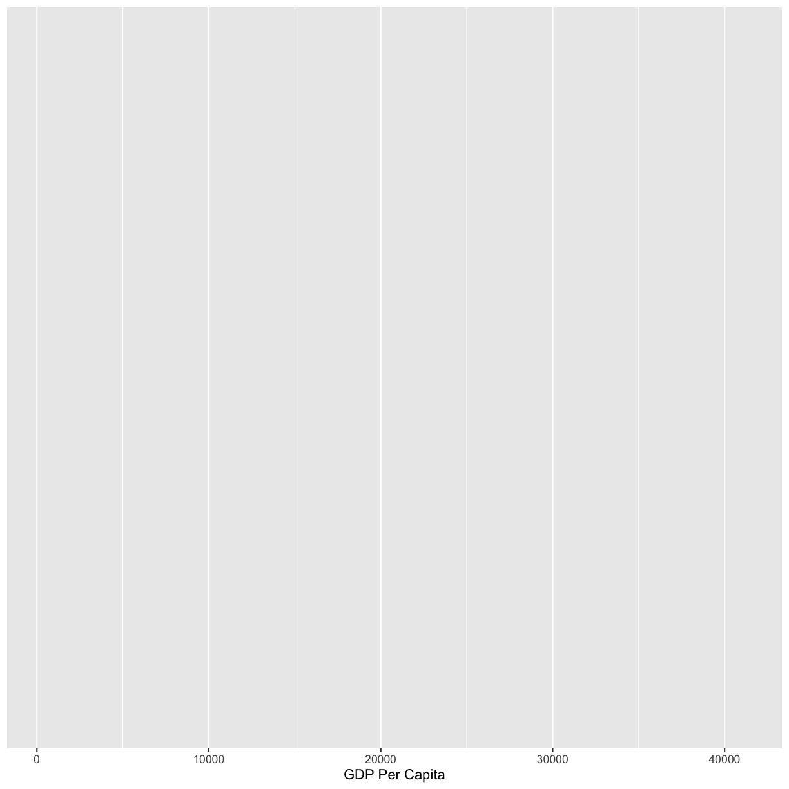
OK. That looks better.
Quotes vs. No Quotes (refresher)
Notice that when we added the label value we did so by placing the values inside quotes. This is because we are not using a value from inside our data object - we are providing the name directly. When you need to include actual text values in R, they will be placed inside quotes to tell them apart from other object or variable names.
The general rule is that if you want to use values from the columns of your data object, then you supply the name of the column without quotes, but if you want to specify a value that does not come from your data, then use quotes.
Mapping life expectancy to the y axis
Map our
lifeExpvalues to the y axis and give them a nice label.Solution
ggplot(data = gapminder_1997) + aes(x = gdpPercap) + labs(x = "GDP Per Capita") + aes(y = lifeExp) + labs(y = "Life Expectancy")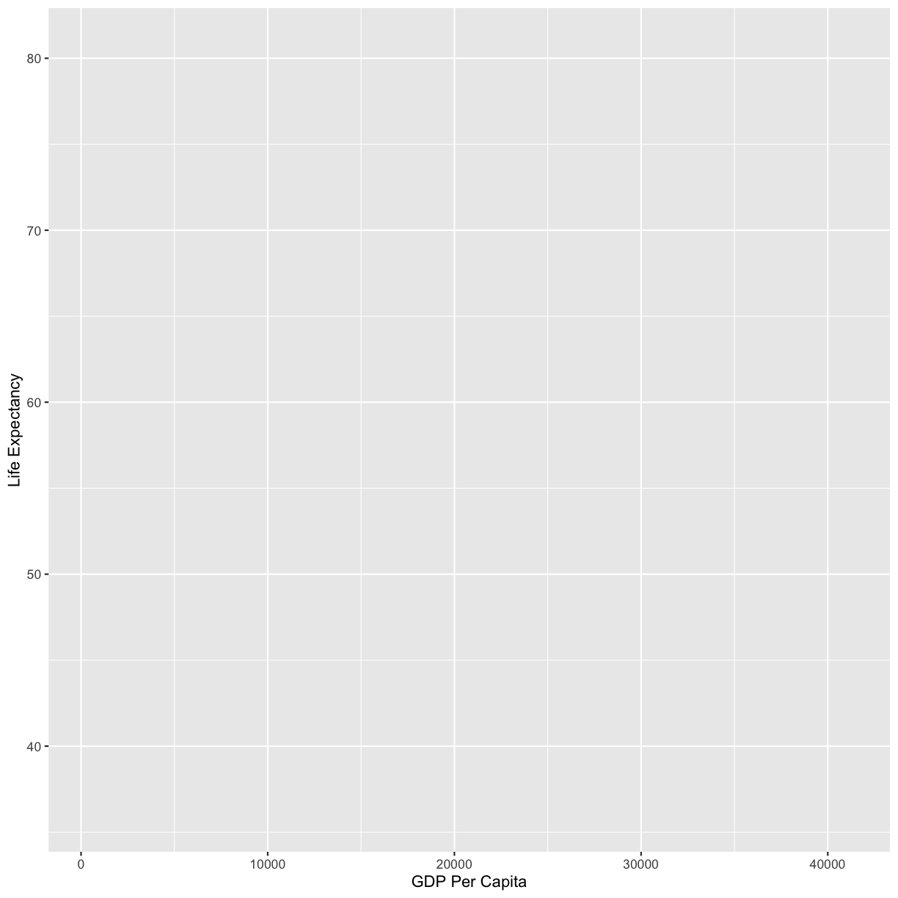
Excellent. We’ve now told our plot object where the x and y values are coming
from and what they stand for. But we haven’t told our object how we want it to
draw the data. There are many different plot types (bar charts, scatter plots,
histograms, etc). We tell our plot object what to draw by adding a geometry
(“geom” for short) to our object. We will talk about many different geometries
today, but for our first plot, let’s draw our data using the “points” geometry
for each value in the data set. To do this, we add geom_point() to our plot
object:
ggplot(data = gapminder_1997) +
aes(x = gdpPercap) +
labs(x = "GDP Per Capita") +
aes(y = lifeExp) +
labs(y = "Life Expectancy") +
geom_point()
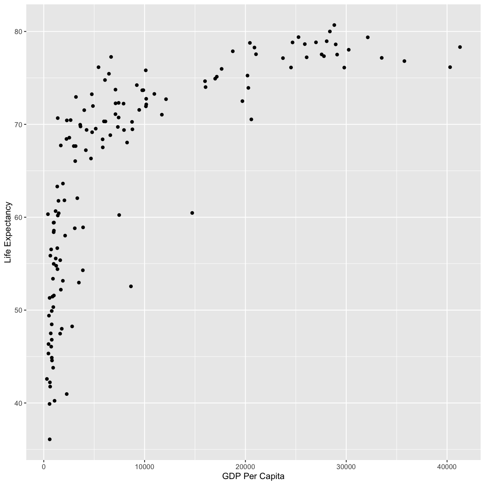
Now we’re really getting somewhere. It finally looks like a proper plot! We can
now see a trend in the data. It looks like countries with a larger GDP tend to
have a higher life expectancy. Let’s add a title to our plot to make that
clearer. Again, we will use the labs() function, but this time we will use the
title = argument.
ggplot(data = gapminder_1997) +
aes(x = gdpPercap) +
labs(x = "GDP Per Capita") +
aes(y = lifeExp) +
labs(y = "Life Expectancy") +
geom_point() +
labs(title = "Do people in wealthy countries live longer?")
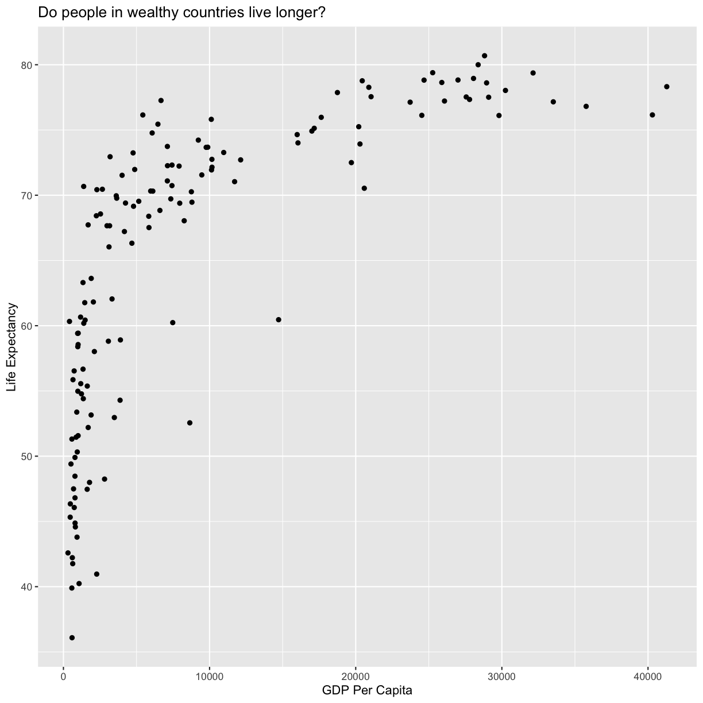
No one can deny we’ve made a very handsome plot! But now looking at the data, we
might be curious about learning more about the points that are the extremes of
the data. We know that we have two more pieces of data in the gapminder_1997
object that we haven’t used yet. Maybe we are curious if the different
continents show different patterns in GDP and life expectancy. One thing we
could do is use a different color for each of the continents. To map the
continent of each point to a color, we will again use the aes() function:
ggplot(data = gapminder_1997) +
aes(x = gdpPercap) +
labs(x = "GDP Per Capita") +
aes(y = lifeExp) +
labs(y = "Life Expectancy") +
geom_point() +
labs(title = "Do people in wealthy countries live longer?") +
aes(color = continent)
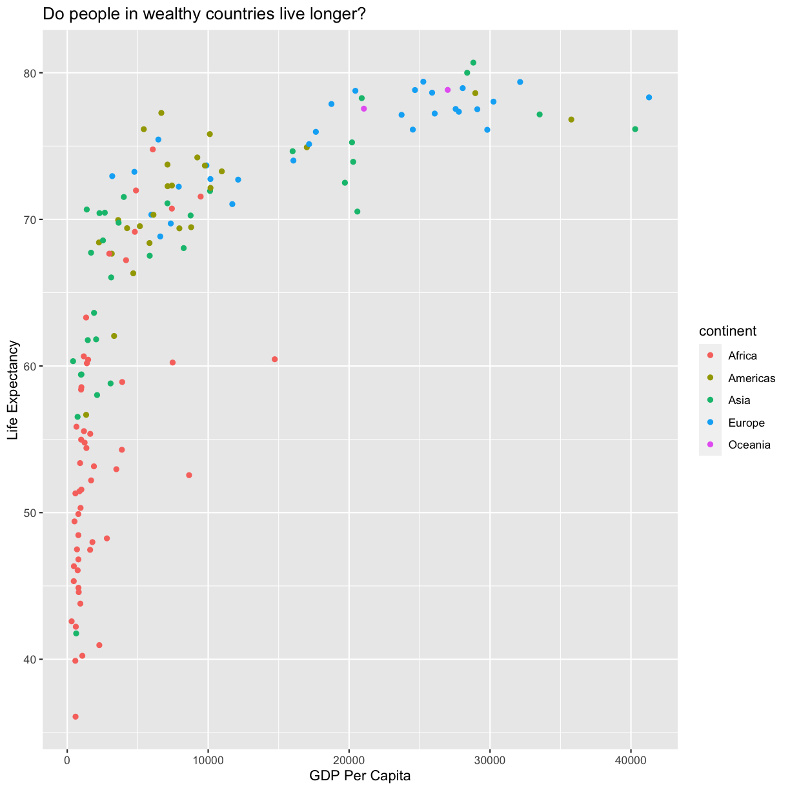
Here we can see that in 1997 the African countries had much lower life
expectancy than many other continents. Notice that when we add a mapping for
color, ggplot automatically provided a legend for us. It took care of assigning
different colors to each of our unique values of the continent variable. (Note
that when we mapped the x and y values, those drew the actual axis labels, so in
a way the axes are like the legends for the x and y values). The colors that
ggplot uses are determined by the color “scale”. Each aesthetic value we can
supply (x, y, color, etc) has a corresponding scale. Let’s change the colors to
make them a bit prettier.
ggplot(data = gapminder_1997) +
aes(x = gdpPercap) +
labs(x = "GDP Per Capita") +
aes(y = lifeExp) +
labs(y = "Life Expectancy") +
geom_point() +
labs(title = "Do people in wealthy countries live longer?") +
aes(color = continent) +
scale_color_brewer(palette = "Set1")
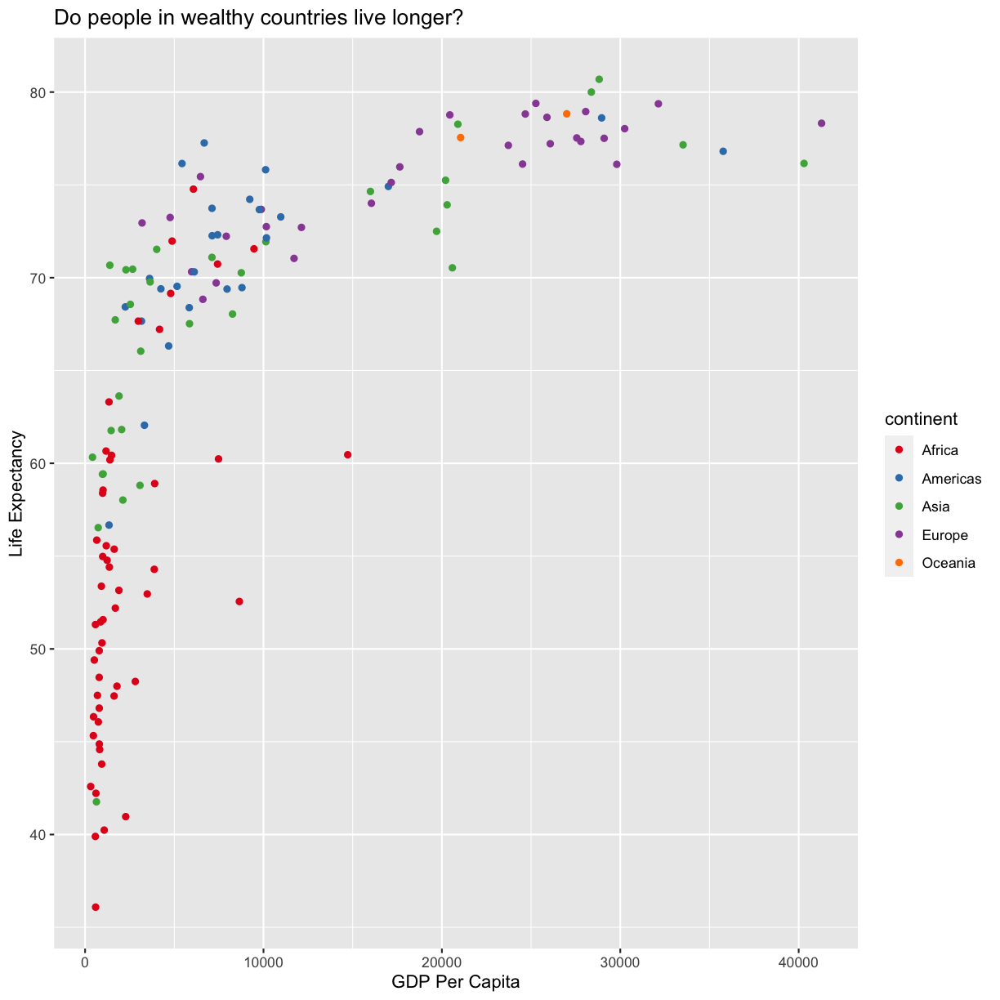
The scale_color_brewer() function is just one of many you can use to change
colors. There are bunch of “palettes” that are build in. You can view them all
by running RColorBrewer::display.brewer.all() or check out the Color Brewer
website for more info about choosing plot colors.
Check out the bonus exercise below for even more options.
Bonus Exercise: Changing colors
There are lots of ways to change colors when using ggplot. The
scale_color_brewer()function is one of many you can use to change colors. There are bunch of “palettes” that are build in. You can view them all by runningRColorBrewer::display.brewer.all()or check out the Color Brewer website for more info about choosing plot colors. There are also lots of other fun options:Play around with different color palettes. Feel free to install another package and choose one of those if you want. Pick your favorite!
Solution
You can use RColorBrewer::display.brewer.all() to pick a color palette. As a bonus, you can also use one of the packages listed above. Here’s an example:
#install.packages("wesanderson") # install package from GitHub library(wesanderson)Error in library(wesanderson): there is no package called 'wesanderson'ggplot(data = gapminder_1997) + aes(x = gdpPercap) + labs(x = "GDP Per Capita") + aes(y = lifeExp) + labs(y = "Life Expectancy") + geom_point() + labs(title = "Do people in wealthy countries live longer?") + aes(color = continent) + scale_color_manual(values = wes_palette('Cavalcanti1'))Error in wes_palette("Cavalcanti1"): could not find function "wes_palette"
Since we have the data for the population of each country, we might be curious what effect population might have on life expectancy and GDP per capita. Do you think larger countries will have a longer or shorter life expectancy? Let’s find out by mapping the population of each country to the size of our points.
Changing point sizes
Map the population of each country to the size of our points HINT: Is size an aesthetic or a geometry? If you’re stuck, feel free to Google it, or look at the help menu.
Solution
You’ll want to use the
aesaesthetic function to change the size:ggplot(data = gapminder_1997) + aes(x = gdpPercap) + labs(x = "GDP Per Capita") + aes(y = lifeExp) + labs(y = "Life Expectancy") + geom_point() + labs(title = "Do people in wealthy countries live longer?") + aes(color = continent) + aes(size = pop) + scale_color_brewer(palette = "Set1")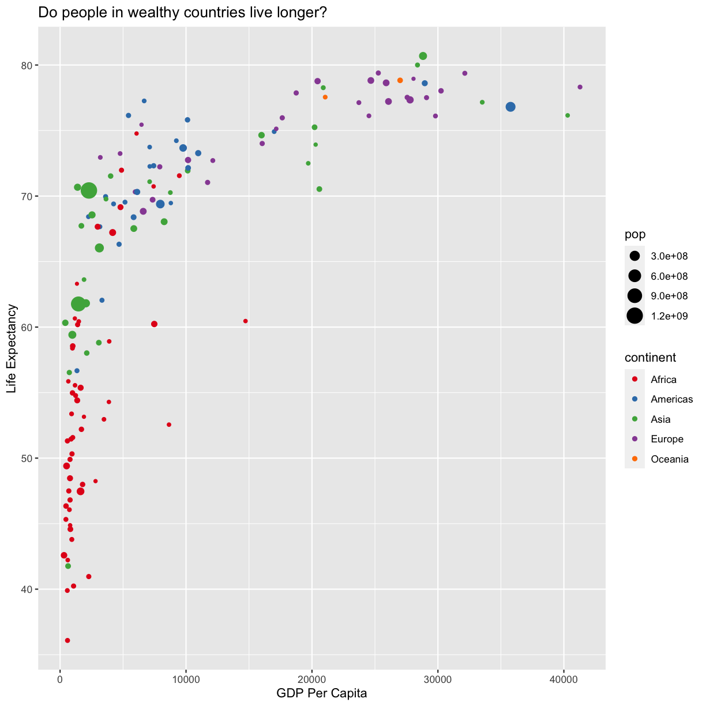
There doesn’t seem to be a very strong association with population size. We can see two very large countries with relatively low GDP per capita (but since the per capita value is already divided by the total population, there is some problems with separating those two values). We got another legend here for size which is nice, but the values look a bit ugly in scientific notation. Let’s divide all the values by 1,000,000 and label our legend “Population (in millions)”
ggplot(data = gapminder_1997) +
aes(x = gdpPercap) +
labs(x = "GDP Per Capita") +
aes(y = lifeExp) +
labs(y = "Life Expectancy") +
geom_point() +
labs(title = "Do people in wealthy countries live longer?") +
aes(color = continent) +
scale_color_brewer(palette = "Set1") +
aes(size = pop/1000000) +
labs(size = "Population (in millions)")

This works because you can treat the columns in the aesthetic mappings just like any other variables and can use functions to transform or change them at plot time rather than having to transform your data first.
Good work! Take a moment to appreciate what a cool plot you made with a few lines of code. In order to fully view its beauty you can click the “Zoom” button in the Plots tab - it will break free from the lower right corner and open the plot in its own window.
Bonus: Changing shapes
Instead of (or in addition to) color, change the shape of the points so each continent has a different shape. (I’m not saying this is a great thing to do - it’s just for practice!) HINT: Is shape an aesthetic or a geometry? If you’re stuck, feel free to Google it, or look at the help menu.
Solution
You’ll want to use the
aesaesthetic function to change the shape:ggplot(data = gapminder_1997) + aes(x = gdpPercap) + labs(x = "GDP Per Capita") + aes(y = lifeExp) + labs(y = "Life Expectancy") + geom_point() + labs(title = "Do people in wealthy countries live longer?") + aes(color = continent) + scale_color_brewer(palette = "Set1") + aes(size = pop/1000000) + labs(size = "Population (in millions)") + aes(shape = continent)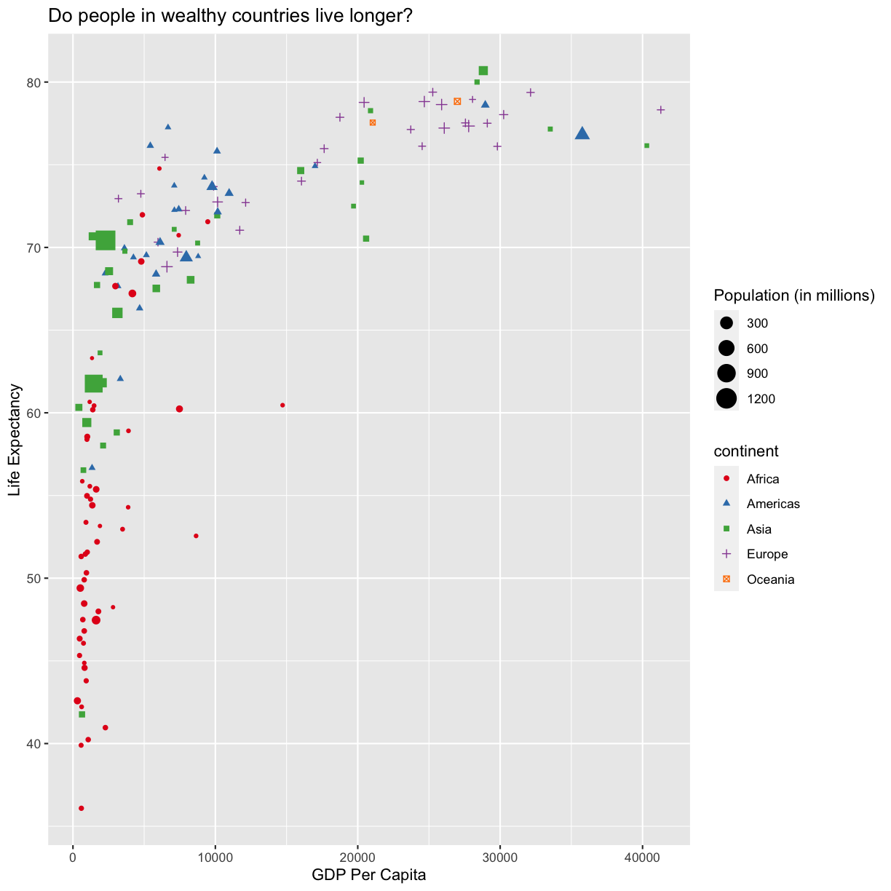
For our first plot we added each line of code one at a time so you could see the
exact affect it had on the output. But when you start to make a bunch of plots,
we can actually combine many of these steps so you don’t have to type as much.
For example, you can collect all the aes() statements and all the labs()
together. A more condensed version of the exact same plot would look like this:
ggplot(data = gapminder_1997) +
aes(x = gdpPercap, y = lifeExp, color = continent, size = pop/1000000) +
geom_point() +
scale_color_brewer(palette = "Set1") +
labs(x = "GDP Per Capita", y = "Life Expectancy",
title = "Do people in wealthy countries live longer?", size = "Population (in millions)")

Storing our plot
We learned about how to save things to object names in the previous lesson. We can do the same thing with plots! Store our final plot in an object called
gdp_vs_life.Solution
gdp_vs_life <- ggplot(data = gapminder_1997) + aes(x = gdpPercap, y = lifeExp, color = continent, size = pop/1000000) + geom_point() + scale_color_brewer(palette = "Set1") + labs(x = "GDP Per Capita", y = "Life Expectancy", title = "Do people in wealthy countries live longer?", size = "Population (in millions)")
Saving our first plot
Let’s say you want to share your plot with friends or co-workers who aren’t running R. It’s wise to keep all the code you used to draw the plot, but sometimes you need to make a PNG or PDF version of the plot so you can share it with your PI or post it to your Instagram story.
To save your plot, you can use the ggsave() function. A few things about ggsave() (the good and the bad):
- [The bad] By default,
ggsave()will save the last plot you made, but this can get confusing so it’s best to create a plot object and then save the specific plot you’re interested in instead. - [The neutral] The default width and height are sometimes not great options,
but you can supply
width=andheight=arguments to change them (the default values are in inches). - [The good] It will determine the file type based on the name you provide.
Let’s save our plot (with an informative name) as a 4x6 inch png:
gdp_vs_life <- ggplot(data = gapminder_1997) +
aes(x = gdpPercap, y = lifeExp, color = continent, size = pop/1000000) +
geom_point() +
scale_color_brewer(palette = "Set1") +
labs(x = "GDP Per Capita", y = "Life Expectancy",
title = "Do people in wealthy countries live longer?", size = "Population (in millions)")
ggsave(filename = "figures/gdp_vs_life.png", plot = gdp_vs_life, width=6, height=4)
ggplot(data = gapminder_1997) +
aes(x = gdpPercap, y = lifeExp, color = continent, size = pop/1000000) +
geom_point() +
scale_color_brewer(palette = "Set1") +
labs(x = "GDP Per Capita", y = "Life Expectancy",
title = "Do people in wealthy countries live longer?", size = "Population (in millions)")
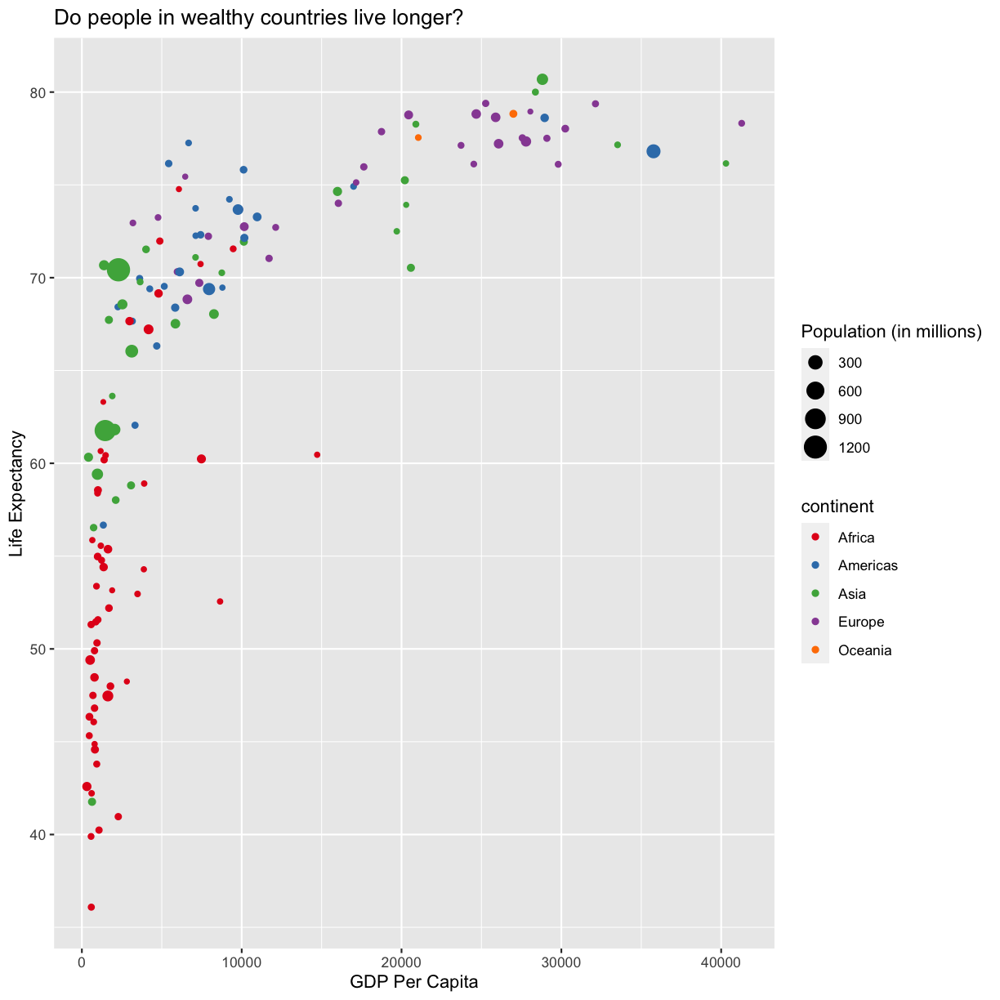
Understanding common errors
Sometimes you accidentally type things wrong and get errors. We call these mis-types “bugs”. Let’s go through some common ones. The most important things to remember are:
- The order of parentheses, quotes, commas, and plusses matters.
- Sometimes you accidentally forget a plus where you need one or include one where you don’t.
For each of the examples below, figure out what the bug is and how to fix it. Feel free to copy/paste into RStudio to help you figure it out.
# Bug 1Solution
gdp_vs_life <- ggplot(data = gapminder_1997) + aes(x = gdpPercap, y = lifeExp, color = continent, size = pop/1000000) + geom_point() + scale_color_brewer(palette = "Set1") + labs(x = "GDP Per Capita", y = "Life Expectancy", title = "Do people in wealthy countries live longer?", size = "Population (in millions)")
Plotting for data exploration
Many datasets are much more complex than the example we used for the first plot. How can we find meaningful patterns in complex data and create visualizations to convey those patterns?
Importing datasets
In the first plot, we looked at a smaller slice of a large dataset. To gain a better understanding of the kinds of patterns we might observe in our own data, we will now use the full dataset, which is stored in a file called “gapminder_data.csv”.
To start, we will read in the data without using the interactive RStudio file navigation.
Rows: 1704 Columns: 6
── Column specification ────────────────────────────────────────────────────────
Delimiter: ","
chr (2): country, continent
dbl (4): year, pop, lifeExp, gdpPercap
ℹ Use `spec()` to retrieve the full column specification for this data.
ℹ Specify the column types or set `show_col_types = FALSE` to quiet this message.
Read in your own data
What argument should be provided in the below code to read in the full dataset?
gapminder_data <- read_csv()Solution
gapminder_data <- read_csv("data/gapminder_data.csv")
Let’s take a look at the full dataset. We could use View(), the way we did for the smaller dataset, but if your data is too big, it might take too long to load. So let’s just look at it in the console. Note that if you’re working with something other than a tibble, you might have to use the head() function to take a look at the first few row, but when you print out a tibble it will just print out the first few lines:
gapminder_data
Notice that this dataset has an additional column year compared to the smaller dataset we started with.
Predicting
ggplotoutputsNow that we have the full dataset read into our R session, let’s plot the data placing our new
yearvariable on the x axis and life expectancy on the y axis. We’ve provided the code below. Notice that we’ve collapsed the plotting function options and left off some of the labels so there’s not as much code to work with. Before running the code, read through it and see if you can predict what the plot output will look like. Then run the code and check to see if you were right!ggplot(data = gapminder_data) + aes(x=year, y=lifeExp, color=continent) + geom_point()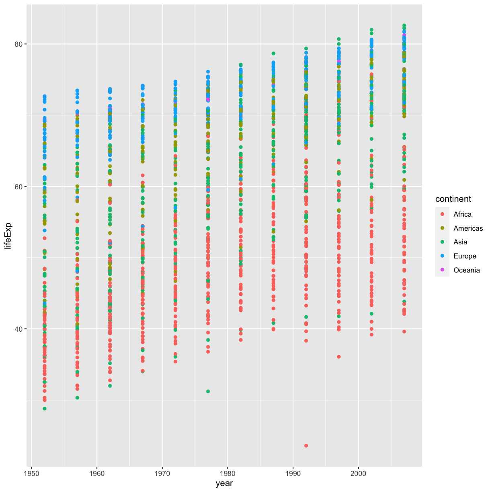
Hmm, the plot we created in the last exercise isn’t very clear. What’s going on? Since the dataset is more complex, the plotting options we used for the smaller dataset aren’t as useful for interpreting these data. Luckily, we can add additional attributes to our plots that will make patterns more apparent. For example, we can generate a different type of plot - perhaps a line plot - and assign attributes for columns where we might expect to see patterns.
Pro-tip
Those of us that use R on a daily basis use cheat sheets to help us remember how to use various R functions. You can also find the cheat sheets in RStudio by going to the “Help” menu and selecting “Cheat Sheets”. The ones that will be most helpful in this workshop are “Data Visualization with ggplot2”, “Data Transformation with dplyr”, “R Markdown Cheat Sheet”, and “R Markdown Reference Guide”.
For things that aren’t on the cheat sheets, Google is your best friend. Even expert coders use Google when they’re stuck or trying something new!
Our plot has a lot of points in columns which makes it hard to see trends over time. A better way to view the data showing changes over time is to use a line plot. Let’s try changing the geom to a line and see what happens.
ggplot(data = gapminder_data) +
aes(x = year, y = lifeExp, color = continent) +
geom_line()
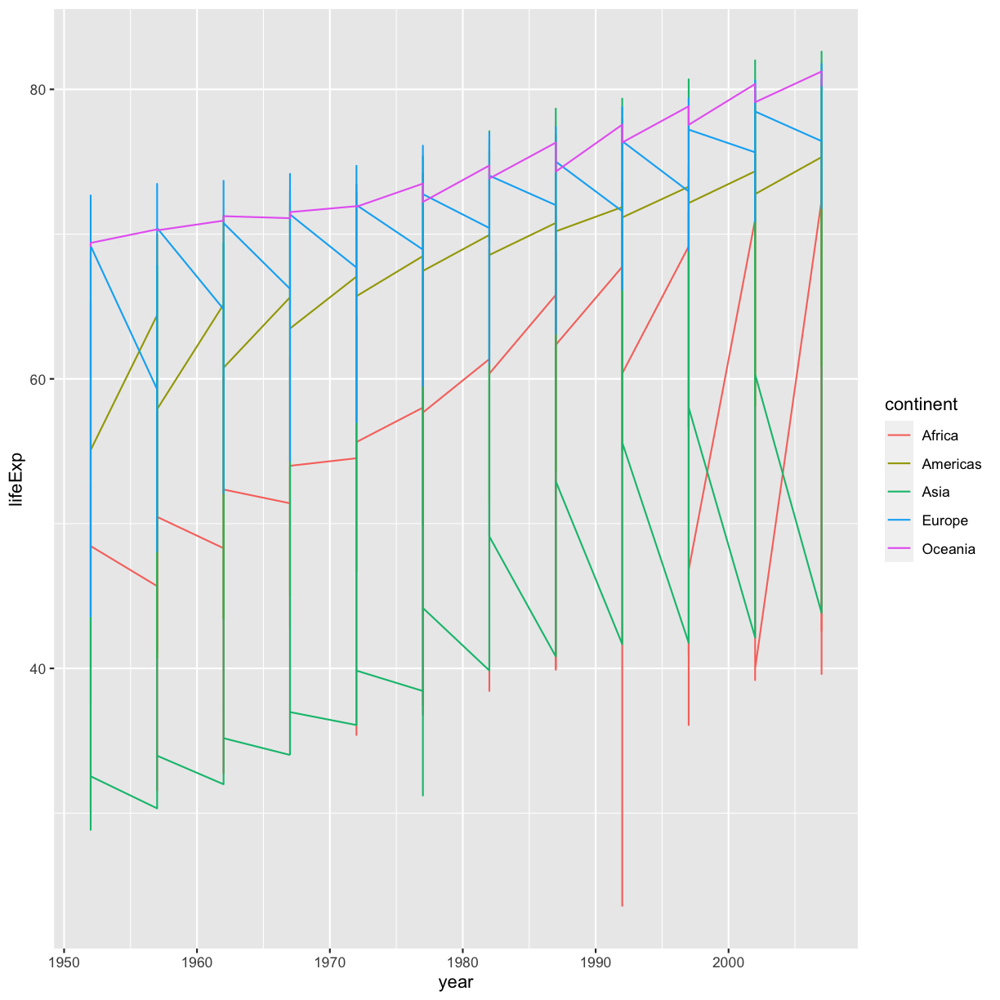
Hmm. This doesn’t look right. By setting the color value, we got a line for each continent, but we really wanted a line for each country. We need to tell ggplot that we want to connect the values for each country value instead. To do this, we need to use the group= aesthetic.
ggplot(data = gapminder_data) +
aes(x = year, y = lifeExp, group = country, color = continent) +
geom_line()
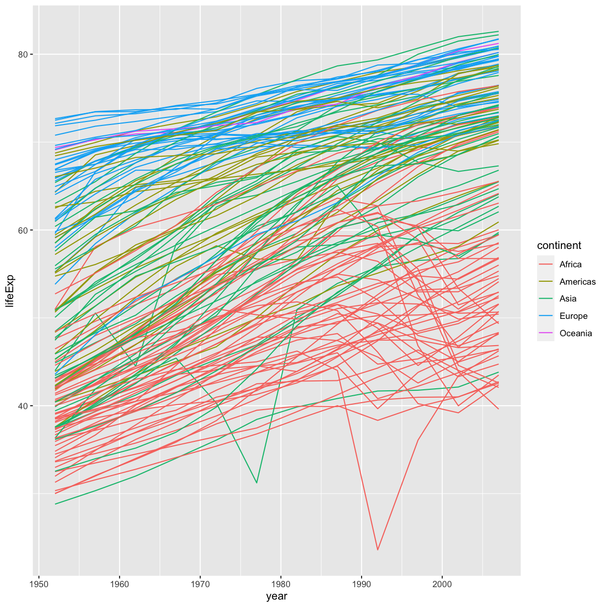
Sometimes plots like this are called “spaghetti plots” because all the lines look like a bunch of wet noodles.
Bonus Exercise: More line plots
Now create your own line plot comparing population and life expectancy! Looking at your plot, can you guess which two countries have experienced massive change in population from 1952-2007?
Solution
ggplot(data = gapminder_data) + aes(x = pop, y = lifeExp, group = country, color = continent) + geom_line()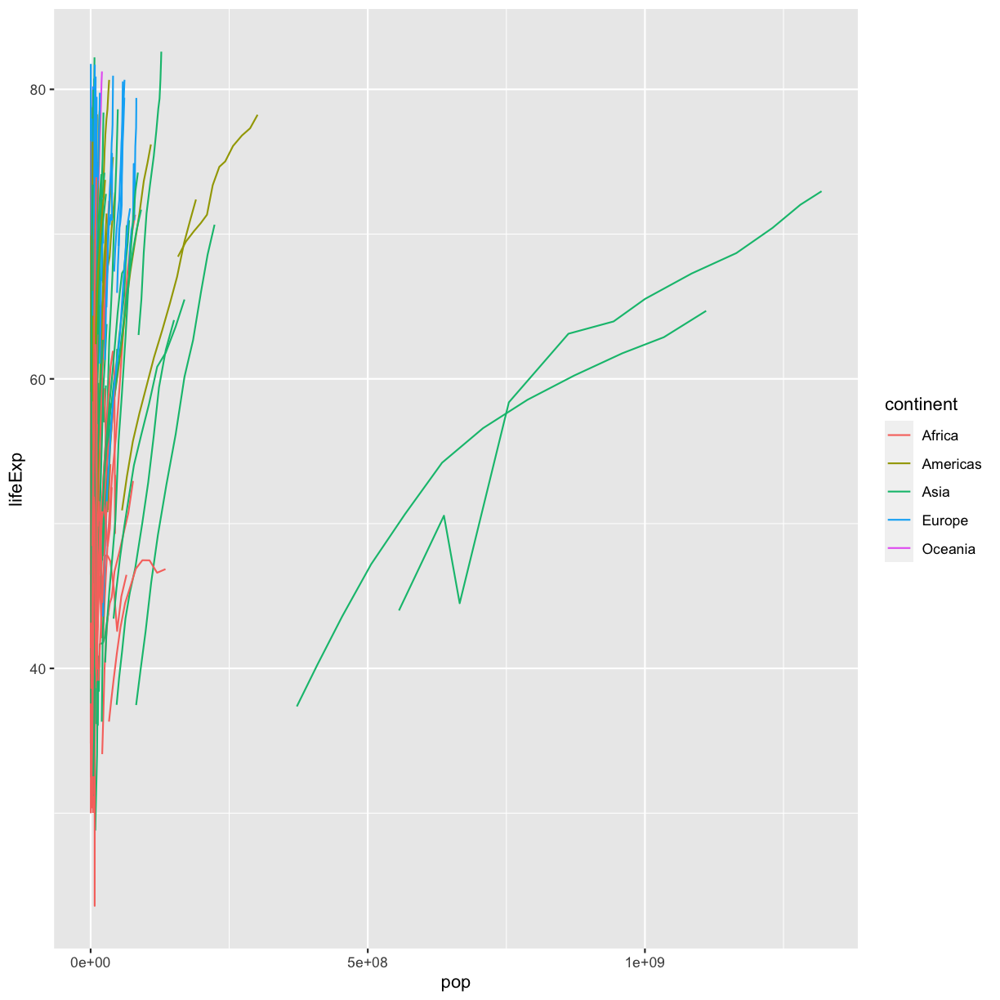 (China and India are the two Asian countries that have experienced massive population growth from 1952-2007.)
Discrete Plots
So far we’ve looked at two plot types (geom_point and geom_line) which work when both the x and y values are numeric. But sometimes one of your values may be discrete (a factor or character).
We’ve previously used the discrete values of the continent column to color in our points and lines. But now let’s try moving that variable to the x axis. Let’s say we are curious about comparing the distribution of the life expectancy values for each of the different continents for the gapminder_1997 data. We can do so using a box plot. Try this out yourself in the exercise below!
Box plots
Using the
gapminder_1997data, use ggplot to create a box plot with continent on the x axis and life expectancy on the y axis. You can use the examples from earlier in the lesson as a template to remember how to pass ggplot data and map aesthetics and geometries onto the plot. If you’re really stuck, feel free to use the internet as well!Solution
ggplot(data = gapminder_1997) + aes(x = continent, y = lifeExp) + geom_boxplot()

This type of visualization makes it easy to compare the range and spread of values across groups. The “middle” 50% of the data is located inside the box and outliers that are far away from the central mass of the data are drawn as points.
Bonus Exercise: Other discrete geoms
Take a look a the ggplot cheat sheet. Find all the geoms listed under “Discrete X, Continuous Y”. Try replacing
geom_boxplotwith one of these other functions.Example solution
ggplot(data = gapminder_1997) + aes(x = continent, y = lifeExp) + geom_violin()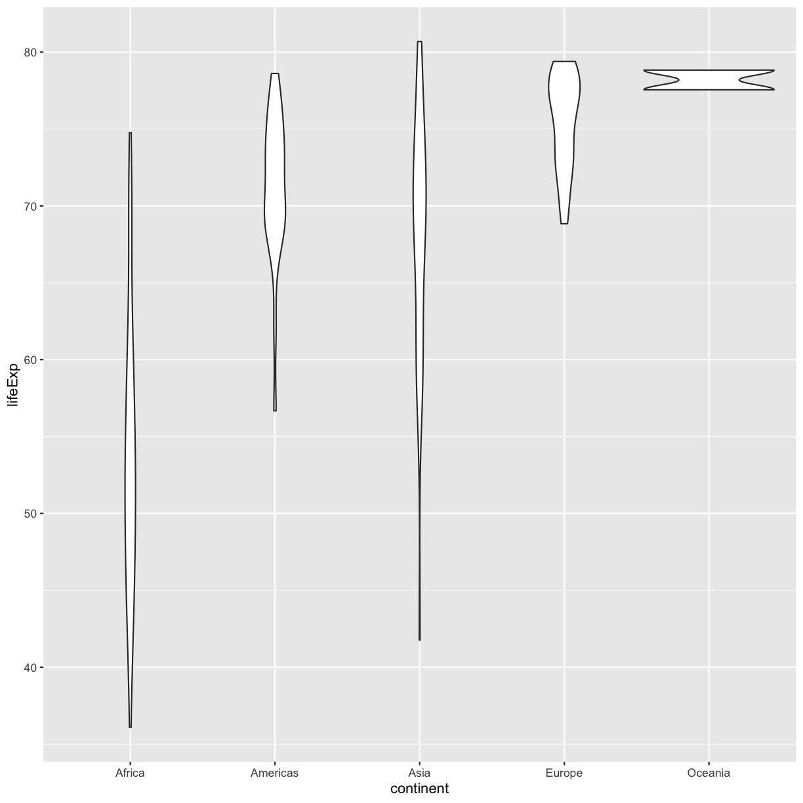
Adding to plot objects
In ggplot2 you can store a plot in an object name and then add layers to the base plot. We’re going to make a base plot with continent on the x axis and life expectancy on the y axis that we can add to, so we don’t have to type out as much stuff:
base_plot <- ggplot(data = gapminder_1997) +
aes(x = continent, y = lifeExp)
base_plot
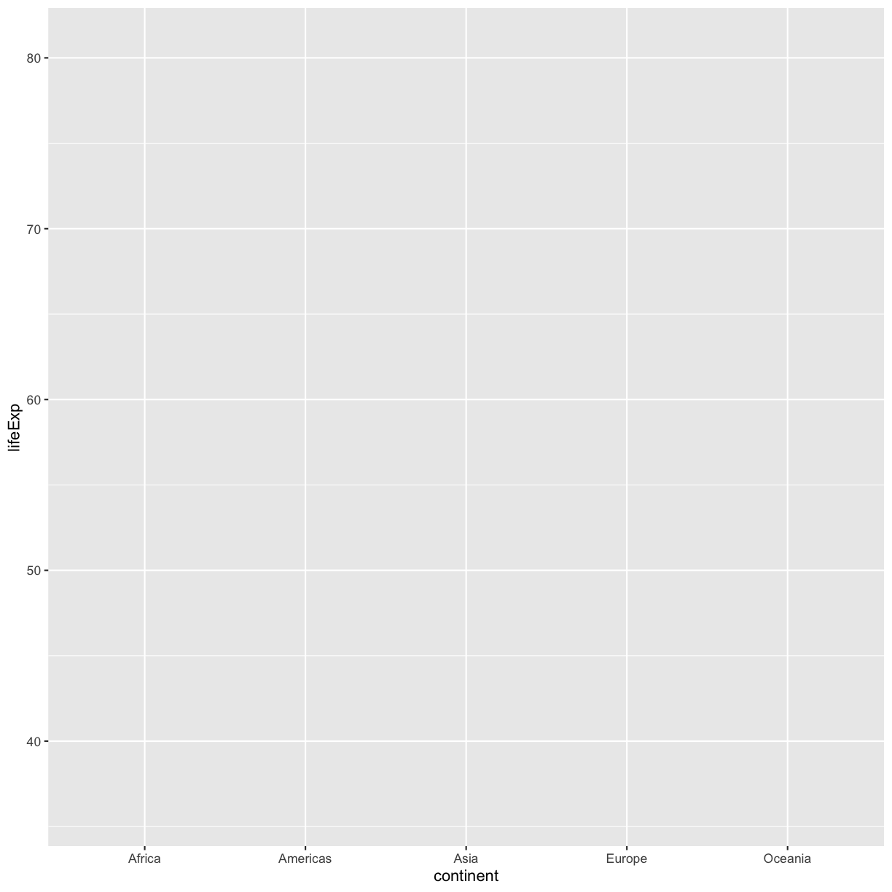
So far we’ve only been adding one geom to each plot, but each plot object can actually contain multiple layers and each layer has it’s own geom. Let’s start with a basic boxplot:
base_plot +
geom_boxplot()
What does base_plot look like now?
base_plot

It still doesn’t have the boxplots because we didn’t update the base_plot object.
Color vs. Fill
Okay, let’s change our boxplots so that the color corresponds to continent. Remeber how to do that?
base_plot +
aes(color = continent) +
geom_boxplot()
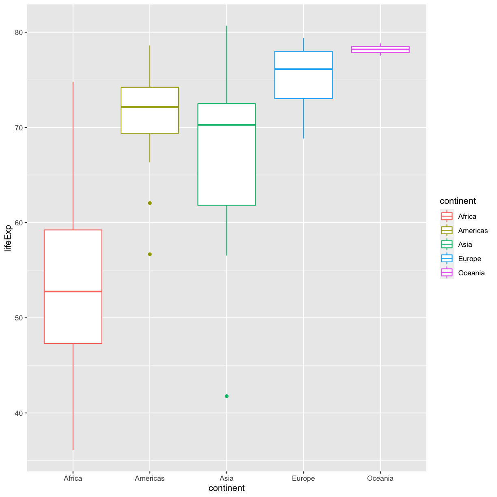
Well, that didn’t get all that colorful. That’s because objects like these boxplots have two different parts that have a color: the shape outline, and the inner part of the shape. For geoms that have an inner part, you change the fill color with fill= rather than color=, so let’s try that instead:
base_plot +
aes(fill = continent) +
geom_boxplot()
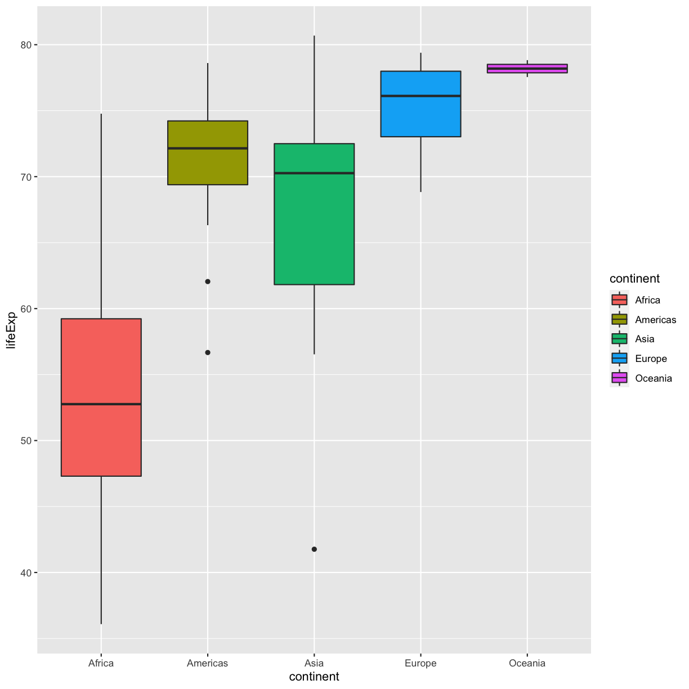
Let’s say we want to change the fill of our plots, but to all the same color. Maybe we want our boxplots to be “cadetblue”. Let’s try it out:
base_plot +
aes(fill="cadetblue") +
geom_boxplot()
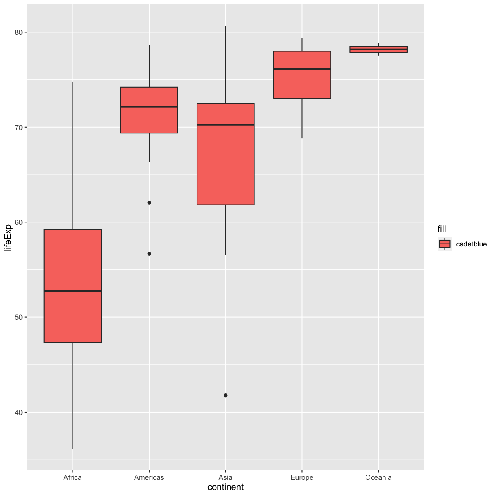
Hmm that’s not quite what we want. In this example, we placed the fill inside the aes() function. Because we are using an aesthetic mapping, the “scale” for the fill will assign colors to values - in this case, we only have one value: the word “cadetblue.” Instead, we can do this by explicitly setting the color aesthetic inside the geom_boxplot function. Because we are assigning a color directly and not using any values from our data to do so, we do not need to use the aes() mapping function. Let’s try it out:
base_plot +
geom_boxplot(fill="cadetblue")
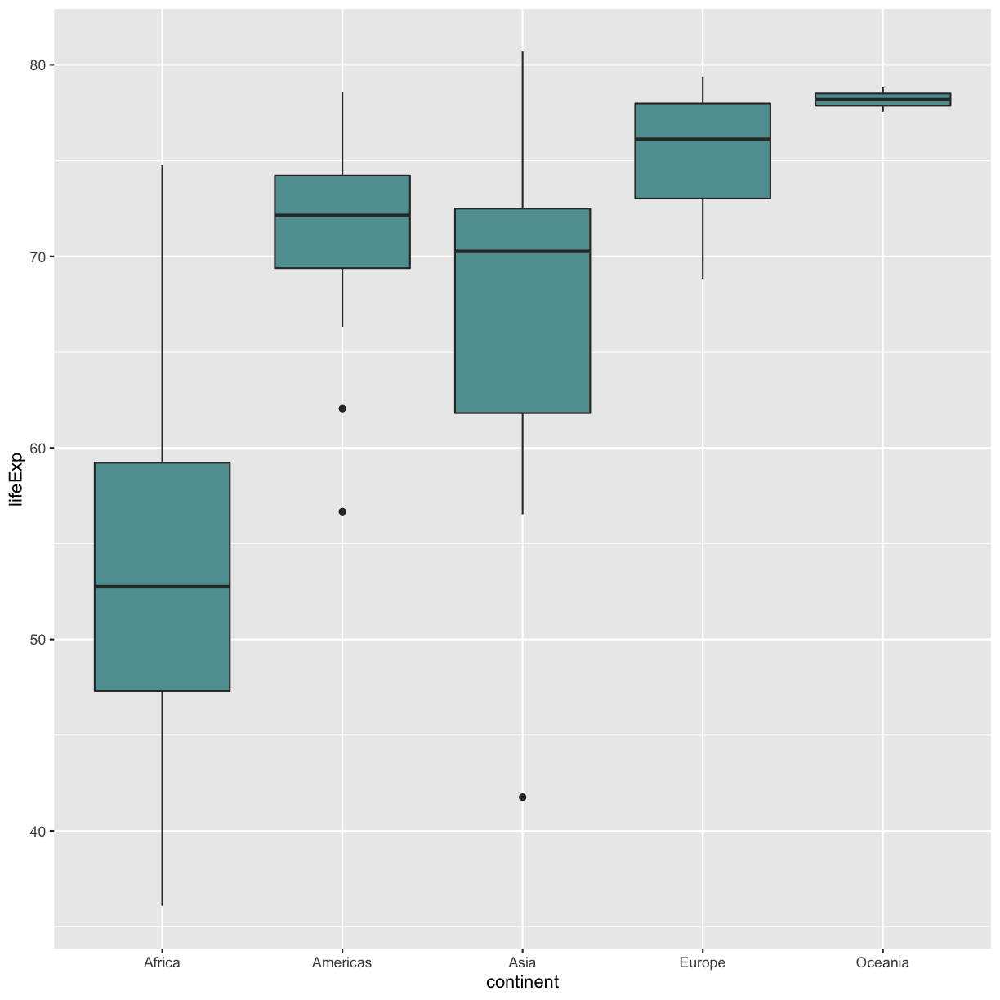
That’s better! R knows lots of color names. You can see the full list if you run colors() in the console. Since there are so many, you can randomly choose 10 if you run sample(colors(), size = 10).
Bonus: Choosing a color
Use
sample(colors(), size = 10)a few times until you get an interesting sounding color name and swap that out for “cadetblue” in the violin plot example.
Transparency
Another aesthetic that can be changed is how transparent our colors/fills are. The
alphaparameter decides how transparent to make the colors. By default,alpha = 1, and our colors are completely opaque. Decreasingalphaincreases the transparency of our colors/fills. Whenalpha = 0, it is entirely transparent. Try changing the transparency of our boxplot. (Hint: Should alpha be inside or outsideaes()?)Solution
base_plot + geom_boxplot(fill="cadetblue", alpha = 0.5)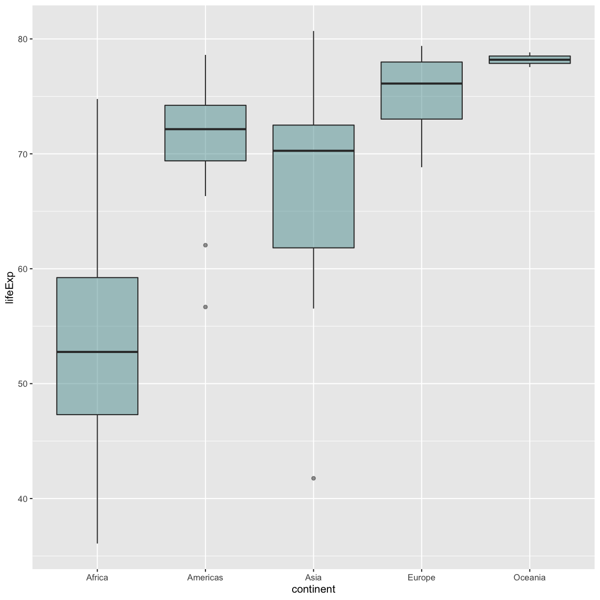
Layers
Now let’s add a layer of points on top of our boxplot that will show us the “raw” data:
base_plot +
geom_boxplot() +
geom_point()

We’ve drawn the points but most of them stack up on top of each other. One way to make it easier to see all the data is to change the transparency of the points. We can do this using the alpha argument we learned about in the exercise above. It takes a value between 0 and 1 where 0 is entirely transparent and 1 is entirely opaque. We perform this modification inside the geom that we want to change:
base_plot +
geom_boxplot() +
geom_point(alpha = 0.3)
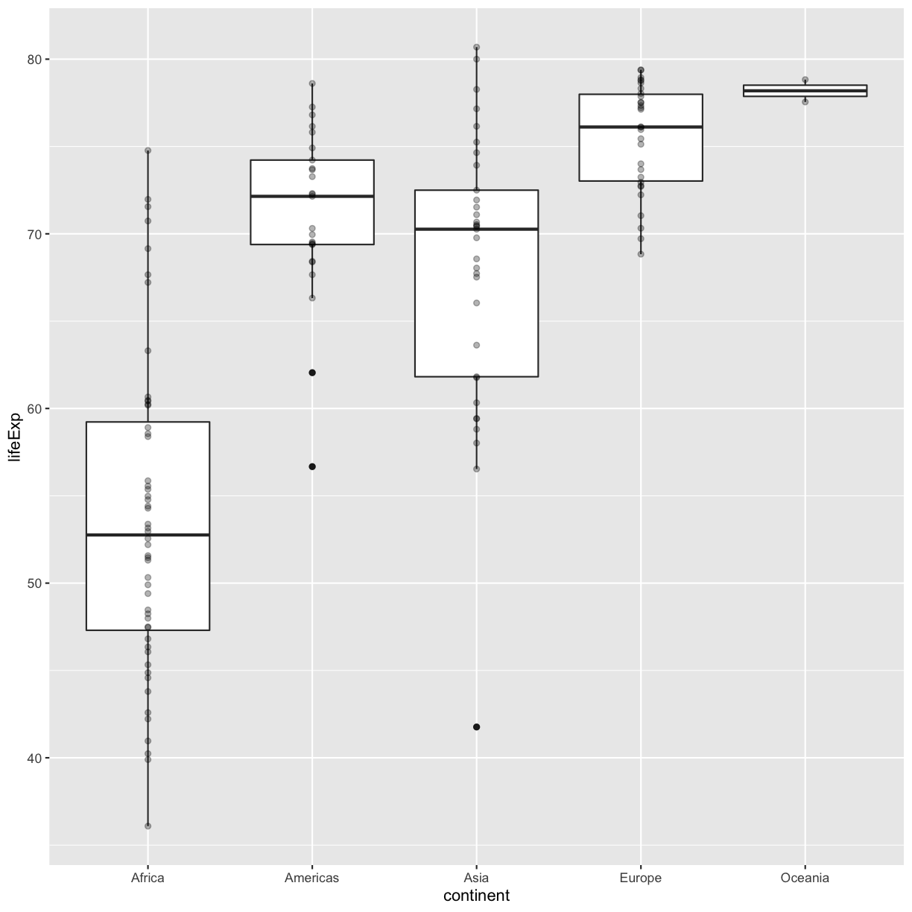
Now let’s try switching the order of geom_boxplot and geom_point. What happens? Why?
base_plot +
geom_point(alpha = 0.3) +
geom_boxplot()
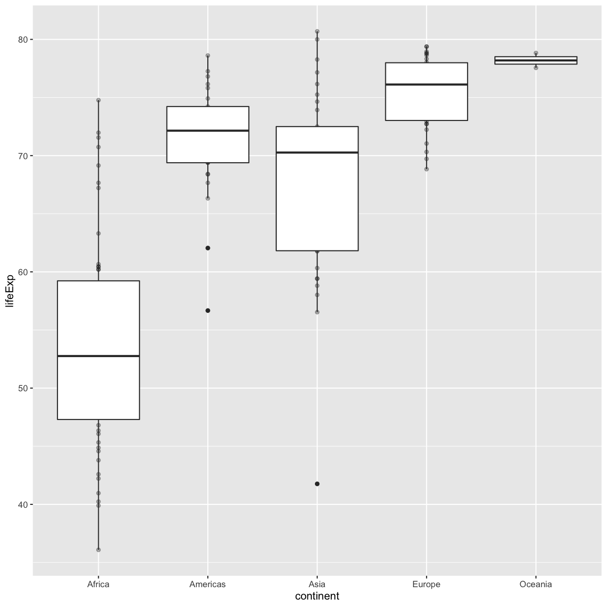
Since we plot the geom_point layer first, the boxplot layer is placed on top of the geom_point layer, so we cannot see a lot of the points.
Going back to having the points on top, let’s color the points by continent. If we add a color aesthetic to the plot, then both the boxplot and the points are colored by continent:
base_plot +
aes(color = continent) +
geom_boxplot() +
geom_point(alpha = 0.3)
So how do we make it so that just the points are colored but not the boxplots? Each layer can have it’s own set of aesthetic mappings. So far we’ve been using aes() outside of the other functions. When we do this, we are setting the “default” aesthetic mappings for the plot. But we can also set the asethetics inside the specific geom that we want to change. To do that, you can place an additional aes() inside of that layer:
base_plot +
geom_boxplot() +
geom_point(aes(color = continent), alpha = 0.3)
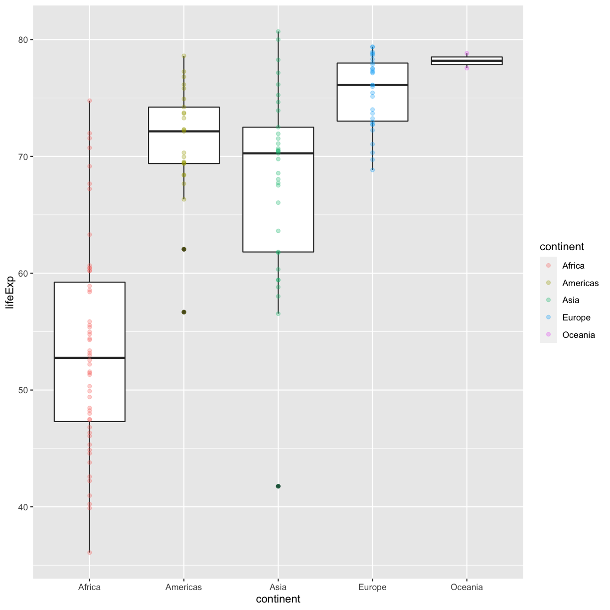
Nice! Both geom_boxplot and geom_point will inherit the default values of aes(continent, lifeExp) in the base plot, but only geom_point will also use aes(color = continent).
Aesthetics inside the
ggplot()functionWe can also map our default aesthetics by passing the values to the
ggplot()function call as is sometimes more common:ggplot(data = gapminder_1997, mapping = aes(x = continent, y = lifeExp)) + geom_boxplot() + geom_point()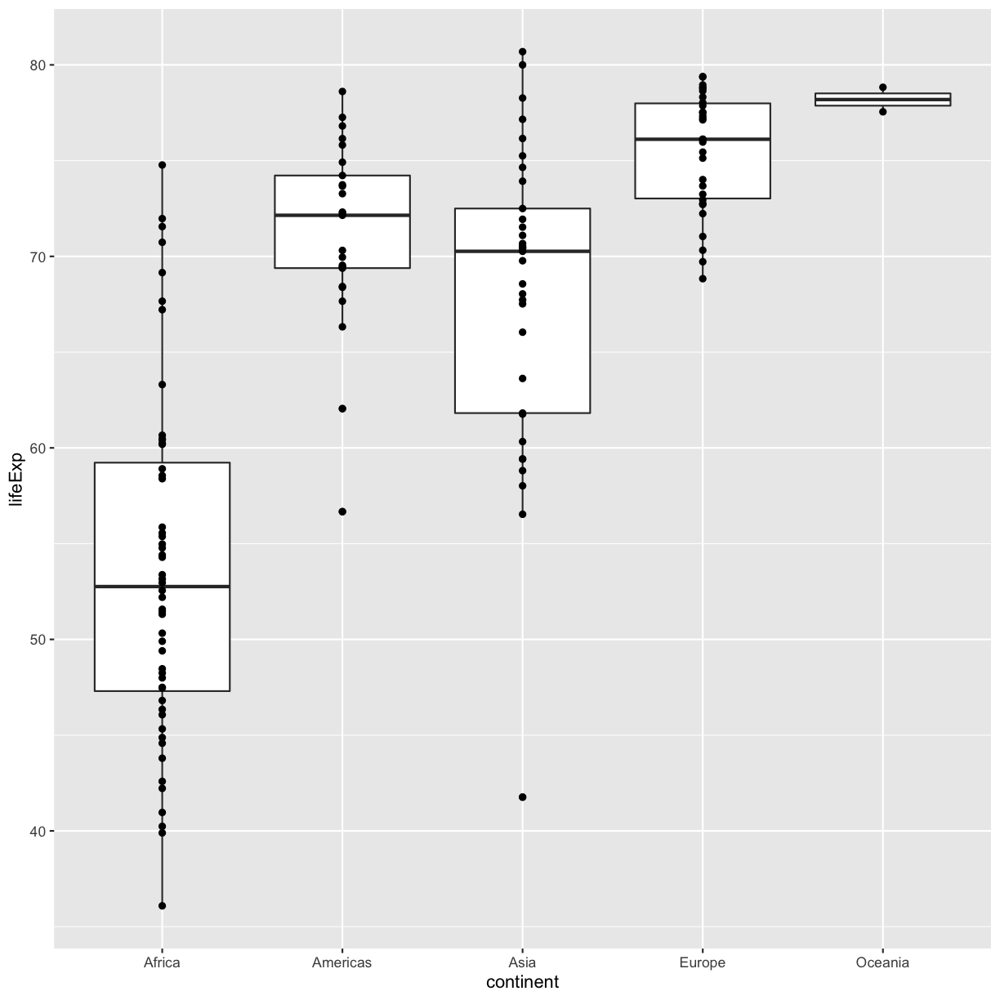
Univariate Plots
We jumped right into make plots with multiple columns. But what if we wanted to take a look at just one column? In that case, we only need to specify a mapping for x and choose an appropriate geom.
Univariate continuous
Let’s start with a histogram to see the range and spread of the life expectancy values
ggplot(gapminder_1997) +
aes(x = lifeExp) +
geom_histogram()
`stat_bin()` using `bins = 30`. Pick better value with `binwidth`.
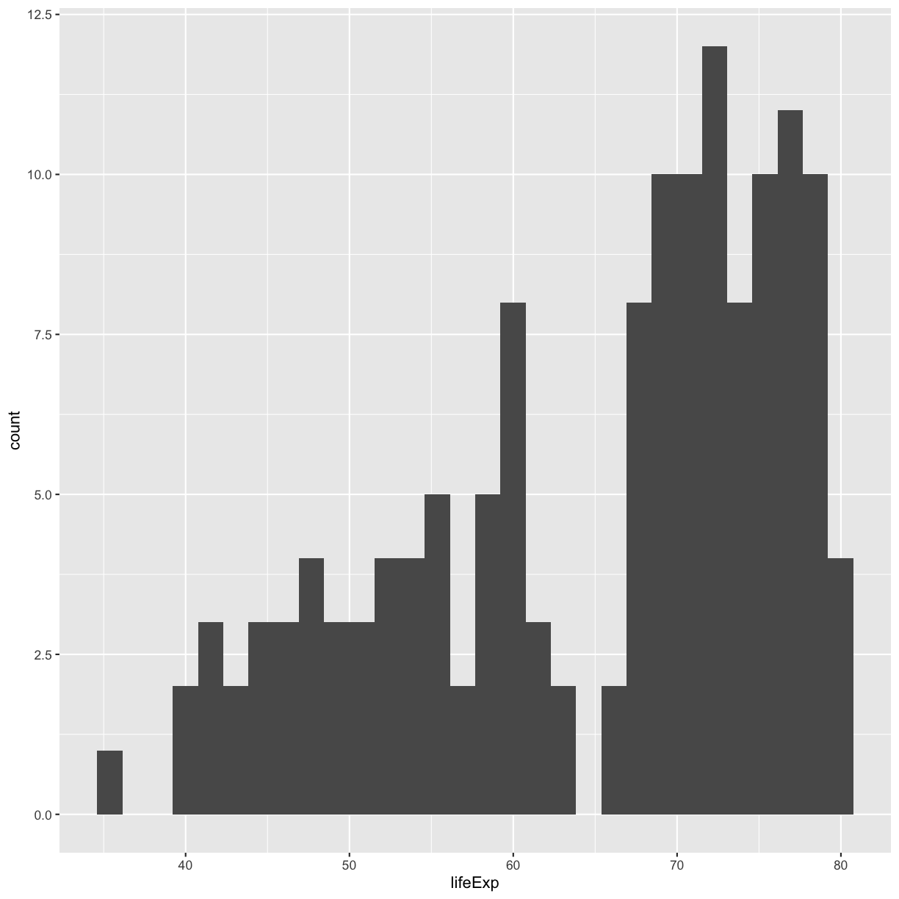
You should not only see the plot in the plot window, but also a message telling you to choose a better bin value. Histograms can look very different depending on the number of bars you decide to draw. The default is 30. Let’s try setting a different value by explicitly passing a bin= argument to the geom_histogram later.
ggplot(gapminder_1997) +
aes(x = lifeExp) +
geom_histogram(bins=20)
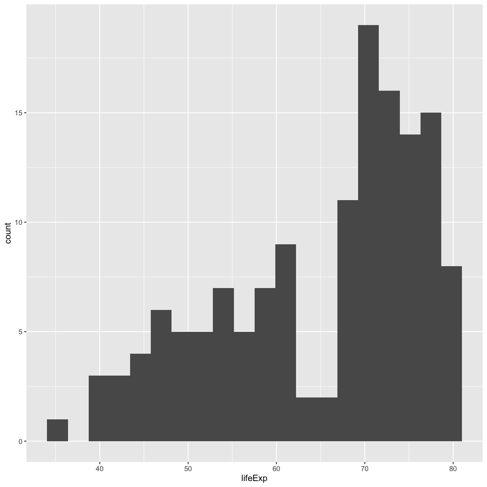
Try different values like 5 or 50 to see how the plot changes.
Bonus Exercise: One variable plots
Rather than a histogram, choose one of the other geometries listed under “One Variable” continuous plots on the ggplot cheat sheet.
Example solution
ggplot(gapminder_1997) + aes(x = lifeExp) + geom_density()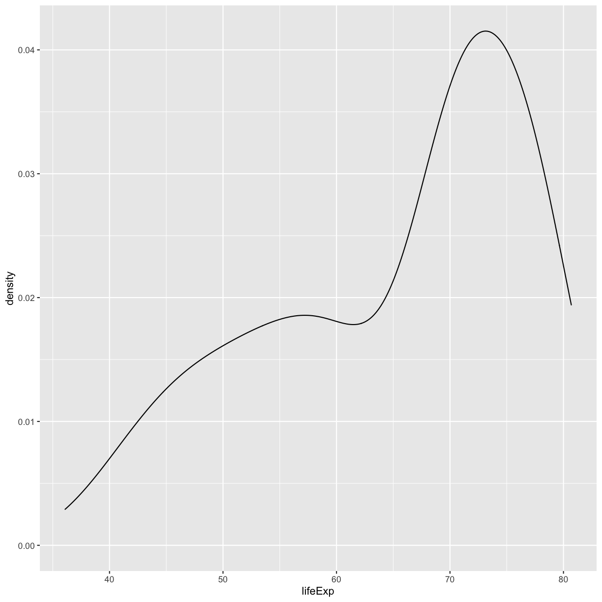
Univariate discrete
What if we want to plot a univariate discrete variable, like continent? For this, we can use a bar chart.
Exercise: Discrete univariate plots
Create a bar plot of
continent. You can try guessing the geom or look it up on the cheat sheet or Internet.Example solution
ggplot(gapminder_1997) + aes(x = continent) + geom_bar()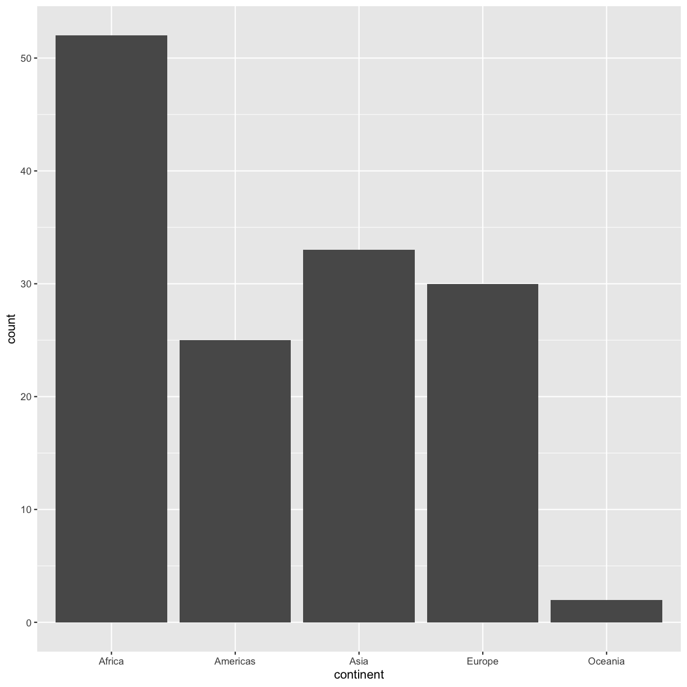
Plot Themes
Our plots are looking pretty nice, but what’s with that grey background? While you can change various elements of a ggplot object manually (background color, grid lines, etc.) the ggplot package also has a bunch of nice built-in themes to change the look of your graph. For example, let’s try adding theme_bw() to our histogram:
ggplot(gapminder_1997) +
aes(x = lifeExp) +
geom_histogram(bins = 20) +
theme_bw()
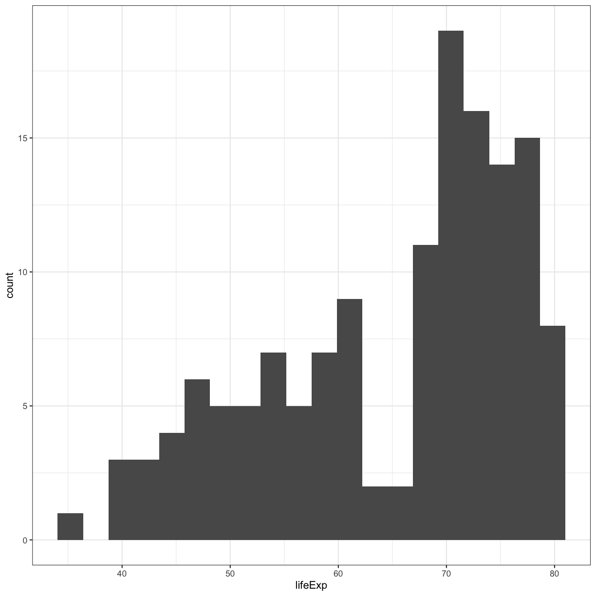
Try out a few other themes, to see which you like: theme_classic(), theme_linedraw(), theme_minimal().
Rotating x axis labels
Often, you’ll want to change something about the theme that you don’t know how to do off the top of your head. When this happens, you can do an Internet search to help find what you’re looking for. To practice this, search the Internet to figure out how to rotate the x axis labels 90 degrees. Then try it out using the histogram plot we made above.
Solution
ggplot(gapminder_1997) + aes(x = lifeExp) + geom_histogram(bins = 20) + theme(axis.text.x = element_text(angle = 90, vjust = 0.5, hjust=1))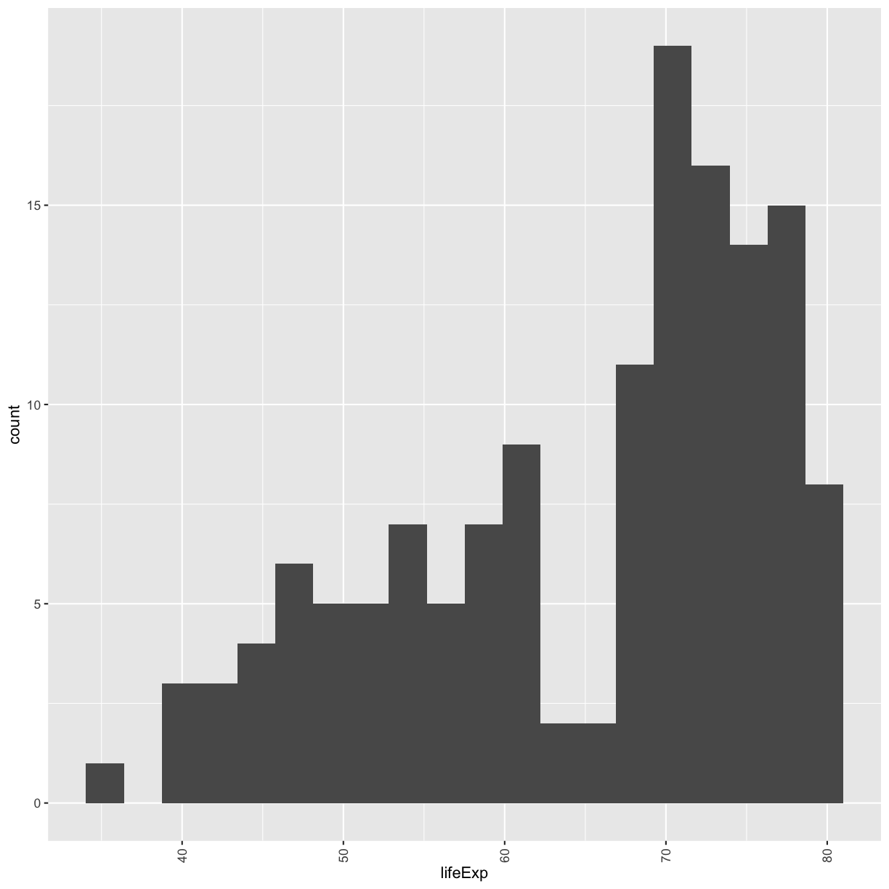
Facets
If you have a lot of different columns to try to plot or have distinguishable subgroups in your data, a powerful plotting technique called faceting might come in handy. When you facet your plot, you basically make a bunch of smaller plots and combine them together into a single image. Luckily, ggplot makes this very easy. Let’s start with a simplified version of our first plot
ggplot(gapminder_1997) +
aes(x = gdpPercap, y = lifeExp) +
geom_point()
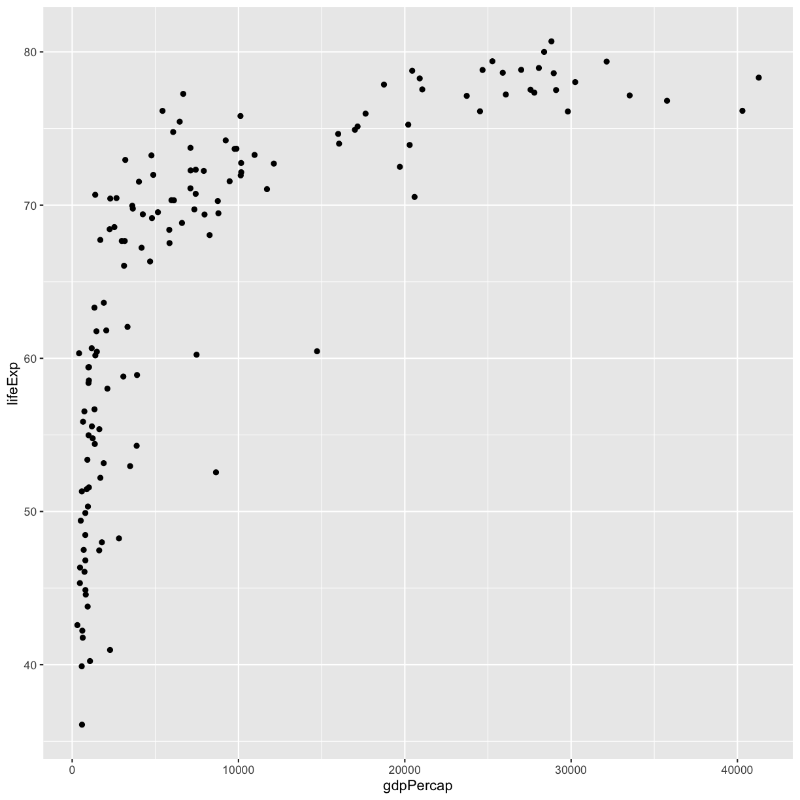
The first time we made this plot, we colored the points differently for each of the continents. This time let’s actually draw a separate box for each continent. We can do this with facet_wrap()
ggplot(gapminder_1997) +
aes(x = gdpPercap, y = lifeExp) +
geom_point() +
facet_wrap(vars(continent))
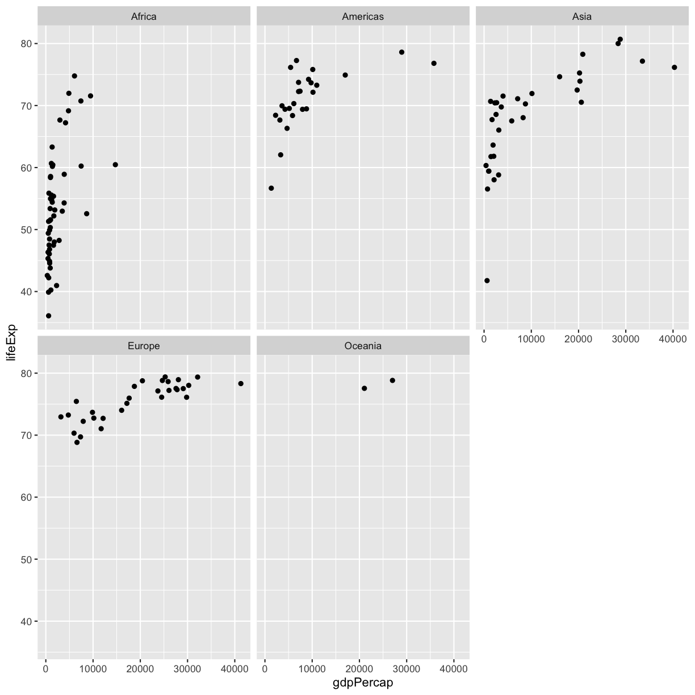
Note that facet_wrap requires this extra helper function called vars() in order to pass in the column names. It’s a lot like the aes() function, but it doesn’t require an aesthetic name. We can see in this output that we get a separate box with a label for each continent so that only the points for that continent are in that box.
The other faceting function ggplot provides is facet_grid(). The main difference is that facet_grid() will make sure all of your smaller boxes share a common axis. In this example, we will stack all the boxes on top of each other into rows so that their x axes all line up.
ggplot(gapminder_1997) +
aes(x = gdpPercap, y = lifeExp) +
geom_point() +
facet_grid(rows = vars(continent))
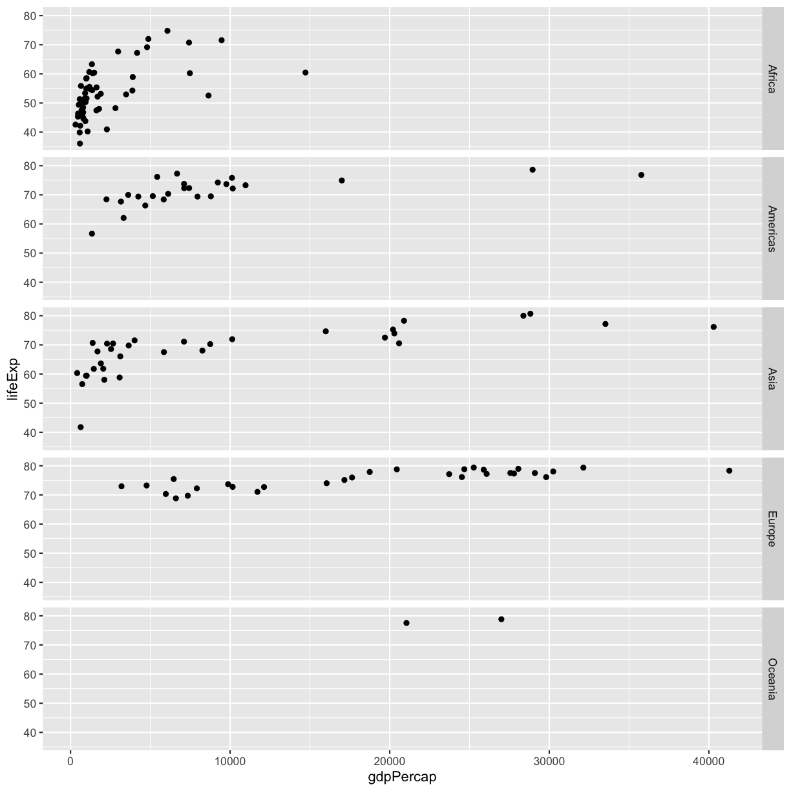
Unlike the facet_wrap output where each box got its own x and y axis, with facet_grid(), there is only one x axis along the bottom.
Creating and saving your own plot
Bonus Exercise: Create and save a plot
Create your own plot using
ggplot(), store it in an object namedmy_plot, and save the plot usingggsave().Example solution
my_plot <- ggplot(data = gapminder_1997)+ aes(x = continent, y = gdpPercap)+ geom_boxplot(fill = "orange")+ theme_bw()+ labs(x = "Continent", y = "GDP Per Capita") ggsave("my_awesome_plot.jpg", plot = my_plot, width=6, height=4)
Applying it to your own data
Now that we’ve learned how impactful effective data visualization can be, and how to create informative visuals in R, it’s time for you to start thinking about what you want to do with your own data!
Pair up with another learner and discuss your data and what type of exploratory data analysis you would like to perform.
Questions to conisder:
- What information do you have in your data set?
- Are there specific questions are you interested in investigating with the data you have?
- What visuals can you create to explore your data? Draw some out on paper! What will these plots show you?
- Is your data in a format that can easily be read into R? How can you improve the formatting of the contents of the file?
Glossary of terms
- Tibble: the way tabular data is stored in R when using the tidyverse. We may also call it a data frame.
- Aesthetic: a visual property of the objects (geoms) drawn in your plot (like x position, y position, color, size, etc)
- Aesthetic mapping (aes): This is how we connect a visual property of the plot to a column of our data
- Comments: lines of text in our code after a
#that are ignored (not evaluated) by R - Geometry (geom): this describes the things that are actually drawn on the plot (like points or lines)
- Facets: Dividing your data into non-overlapping groups and making a small plot for each subgroup
- Layer: Each ggplot is made up of one or more layers. Each layer contains one geometry and may also contain custom aesthetic mappings and private data
- Factor: a way of storing data to let R know the values are discrete so they get special treatment
Key Points
Use
read_csv()to read tabular data in R.Geometries are the visual elements drawn on data visualizations (lines, points, etc.), and aesthetics are the visual properties of those geometries that are assigned to variables in the data (color, position, etc.).
Use
ggplot()and geoms to create data visualizations, and save them usingggsave().
R for Data Analysis
Overview
Teaching: 75 min
Exercises: 15 minQuestions
How can I summarize my data in R?
How can R help make my research more reproducible?
Objectives
To become familiar with the functions of the
dplyrandtidyrpackages.To be able to create plots and summary tables to answer analysis questions.
Contents
- Plotting review
- Getting started
- An introduction to data analysis in R using
dplyr - Applying it to your own data
Plotting review
First, navigate to the un-reports directory however you’d like and open un-report.Rproj.
This should open the un-report R project in RStudio.
You can check this by seeing if the Files in the bottom right of RStudio are the ones in your un-report directory.
The very first step is to read in the gapminder dataset, so do that first! Also load the tidyverse package.
Solution
library(tidyverse)── Attaching packages ─────────────────────────────────────── tidyverse 1.3.1 ──✔ ggplot2 3.3.6 ✔ purrr 0.3.4 ✔ tibble 3.1.7 ✔ dplyr 1.0.9 ✔ tidyr 1.2.0 ✔ stringr 1.4.0 ✔ readr 2.1.2 ✔ forcats 0.5.1── Conflicts ────────────────────────────────────────── tidyverse_conflicts() ── ✖ dplyr::filter() masks stats::filter() ✖ dplyr::lag() masks stats::lag()gapminder <- read_csv('data/gapminder_data.csv')Rows: 1704 Columns: 6── Column specification ──────────────────────────────────────────────────────── Delimiter: "," chr (2): country, continent dbl (4): year, pop, lifeExp, gdpPercap ℹ Use `spec()` to retrieve the full column specification for this data. ℹ Specify the column types or set `show_col_types = FALSE` to quiet this message.
Investigating population over time.
Next, make a scatter plot of year vs. population, separated into a plot for each contient. Feel free to look back at the content from yesterday if you want!
Solution
ggplot(gapminder, aes(x=year,y=pop)) + geom_point() + facet_wrap(vars(continent))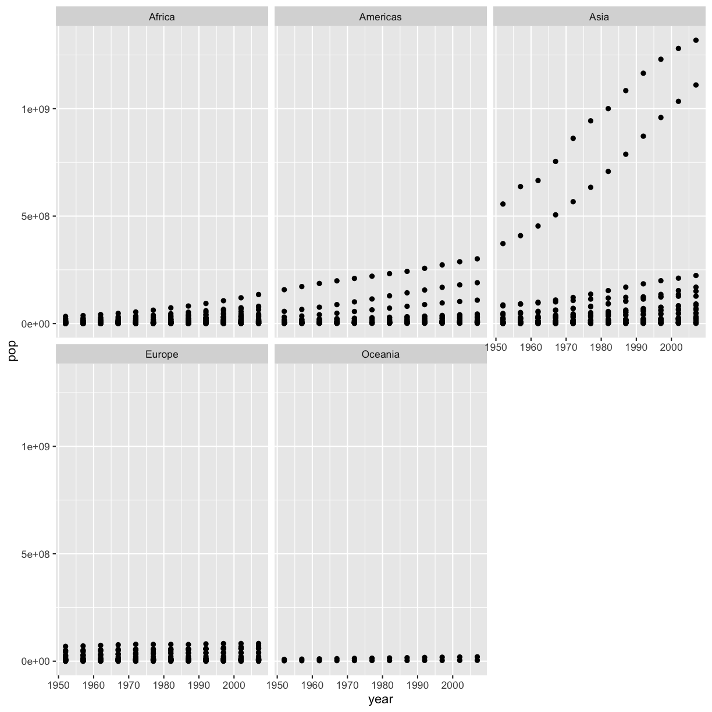
It seems like there are a couple outliers. By the end of today, we’ll be able to identify what countries those are and how to exclude them from the plot.
Getting Started
Yesterday we spent a lot of time making plots in R using the ggplot2 package. Visualizing data using plots is a very powerful skill in R, but what if we would like to work with only a subset of our data? Or clean up messy data, calculate summary statistics, create a new variable, or join two datasets together? There are several different methods for doing this in R, and we will touch on a few today using functions the dplyr package.
First, we will create a new R Script file for our work. Open RStudio. Choose “File” > “New File” > “RScript”. We will save this file as un_data_analysis.R
Loading in the data
We will start by importing the complete gapminder dataset that we used yesterday into our fresh new R session. Yesterday we did this using a “point-and-click” commands. Today let’s type them into the console ourselves: gapminder_data <- read_csv("data/gapminder_data.csv")
Exercise
If we look in the console now, we’ll see we’ve received an error message saying that R “could not find the function
read_csv()”. Hint: Packages…Solution
What this means is that R cannot find the function we are trying to call. The reason for this usually is that we are trying to run a function from a package that we have not yet loaded. This is a very common error message that you will probably see a lot when using R. It’s important to remember that you will need to load any packages you want to use into R each time you start a new session. The
read_csvfunction comes from thereadrpackage which is included in thetidyversepackage so we will just load thetidyversepackage and run the import code again.
Now that we know what’s wrong, We will use the read_csv() function from the Tidyverse readr package. Load the tidyverse package and gapminder dataset using the code below.
library(tidyverse)
The output in your console shows that by doing this, we attach several useful packages for data wrangling, including readr. Check out these packages and their documentation at tidyverse.org
Reminder: Many of these packages, including
dplyr, come with “Cheatsheets” found under the Help RStudio menu tab.
Reload your data:
gapminder_data <- read_csv("data/gapminder_data.csv")
Rows: 1704 Columns: 6
── Column specification ────────────────────────────────────────────────────────
Delimiter: ","
chr (2): country, continent
dbl (4): year, pop, lifeExp, gdpPercap
ℹ Use `spec()` to retrieve the full column specification for this data.
ℹ Specify the column types or set `show_col_types = FALSE` to quiet this message.
Notice that the output of the read_csv() function is pretty informative. It tells us the name of all of our column headers as well as how it interpreted the data type. This birds-eye-view can help you take a quick look that everything is how we expect it to be.
Now we have the tools necessary to work through this lesson.
An introduction to data analysis in R using dplyr
Get stats fast with summarize()
Let’s say we would like to know what is the mean (average) life expecteny in the dataset. R has a built in function function called mean() that will calculate this value for us. We can apply that function to our lifeExp column using the summarize() function. Here’s what that looks like:
summarize(gapminder_data, averageLifeExp=mean(lifeExp))
# A tibble: 1 × 1
averageLifeExp
<dbl>
1 59.5
When we call summarize(), we can use any of the column names of our data object as values to pass to other functions. summarize() will return a new data object and our value will be returned as a column.
Note: The
summarize()andsummarise()perform identical functions.
We name this new column so we can use in a future argument. So the averageLifeExp= part tells summarize() to use “averageLifeExp” as the name of the new column. Note that you don’t have to quotes around this new name as long as it starts with a letter and doesn’t include a space.
Instead of including the data as an argument, we can use the pipe operator %>% to pass the data value into the summarize function.
gapminder_data %>% summarize(averageLifeExp=mean(lifeExp))
# A tibble: 1 × 1
averageLifeExp
<dbl>
1 59.5
This line of code will do the exact same thing as our first summary command, but the piping function tells R to use the gapminder_data dataframe as the first argument in the next function.
This lets us “chain” together multiple functions, which will be helpful later. Note that the pipe (%>%) is a bit different from using the ggplot plus (+). Pipes take the output from the left side and use it as input to the right side. Plusses layer on additional information (right side) to a preexisting plot (left side).
We can also add an
gapminder_data %>%
summarize(averageLifeExp=mean(lifeExp))
# A tibble: 1 × 1
averageLifeExp
<dbl>
1 59.5
Using the pipe operator %>% and enter command makes our code more readable. The pipe operator %>% also helps to avoid using nested function and minimizes the need for new variables.
Since we use the pipe operator so often, there is a keyboard shortcut for it in RStudio. You can press
Pro tip: Saving a new dataframe
Notice that when we run the following code, we are not actually saving a new variable:
gapminder_data %>% summarize(averageLifeExp=mean(lifeExp))This simply outputs what we have created, but does not change actually change
gapminder_dataor save a new dataframe. To save a new dataframe, we could run:gapminder_data_summarized <- gapminder_data %>% summarize(averageLifeExp=mean(lifeExp))Or if we want to change
gapminder_dataitself:gapminder_data <- gapminder_data %>% summarize(averageLifeExp=mean(lifeExp))IMPORTANT: This would overwrite the existing
gapminder_dataobject.For now, we will not be saving dataframes, since we are just experimenting with
dplyrfunctions, but it will be useful later on in this lesson.
Narrow down rows with filter()
Let’s take a look at the value we just calculated, which tells us the average life expectancy for all rows in the data was 59.5. That seems a bit low, doesn’t it? What’s going on?
Well, remember the dataset contains rows from many different years and many different countries. It’s likely that life expectancy has increased overtime, so it may not make sense to average over all the years at the same time.
Use summarize() to find the most recent year in the data set. We can use the max() function to return the maximum value.
Practice using the
%>%to summarize dataFind the most recent year using the piping function.
Solution:
gapminder_data %>% summarize(recent_year = max(year))# A tibble: 1 × 1 recent_year <dbl> 1 2007
So we see that the most recent year in the dataset is 2007. Let’s calculate the life expectancy for all countries for only that year. To do that, we will use the filter() function to only use rows for that year before calculating the mean value.
gapminder_data %>%
filter(year == 2007) %>%
summarize(average=mean(lifeExp))
# A tibble: 1 × 1
average
<dbl>
1 67.0
Filtering the dataset
What is the average GDP per capita for the first year in the dataset? Hint: the column headers identified by
read_csv()showed us there was a column called gdpPercap in the datasetSolution
Identify the earliest year in our dataset using
min()andsummarize()gapminder_data %>% summarize(first_year=min(year))# A tibble: 1 × 1 first_year <dbl> 1 1952We see here that the first year in the dataset is 1952. Filter to only 1952, and determin the average GDP per capita.
gapminder_data %>% filter(year == 1952) %>% summarize(average_gdp=mean(gdpPercap))# A tibble: 1 × 1 average_gdp <dbl> 1 3725.By combining
filter()andsummarize()we were able to calculate the mean GDP per capita in the year 1952.
Notice how the pipe operator (%>%) allows us to combine these two simple steps into a more complicated data extraction?. We took the data, filtered out the rows, then took the mean value. The argument we pass to filter() needs to be some expression that will return TRUE or FALSE. We can use comparisons like > (greater than) and < (less than) for example. Here we tested for equality using a double equals sign ==. You use == (double equals) when testing if two values are equal, and you use = (single equals) when naming arguments that you are passing to functions. Try changing it to use filter(year = 2007) and see what happens.
Grouping rows using group_by()
We see that the life expectancy in 2007 is much larger than the value we got using all of the rows. It seems life expectancy is increasing which is good news. But now we might be interested in calculating the average for each year. Rather that doing a bunch of different filter() statements, we can instead use the group_by() function. The function allows us to tell the code to treat the rows in logical groups, so rather than summarizing over all the rows, we will get one summary value for each group. Here’s what that will look like:
gapminder_data %>%
group_by(year) %>%
summarize(average=mean(lifeExp))
# A tibble: 12 × 2
year average
<dbl> <dbl>
1 1952 49.1
2 1957 51.5
3 1962 53.6
4 1967 55.7
5 1972 57.6
6 1977 59.6
7 1982 61.5
8 1987 63.2
9 1992 64.2
10 1997 65.0
11 2002 65.7
12 2007 67.0
The group_by() function expects you to pass in the name of a column (or multiple columns separated by comma) in your data.
Note that you might get a message about the summarize function regrouping the output by ‘year’. This simply indicates what the function is grouping by.
Grouping the data
Try calculating the average life expectancy by continent.
Solution
gapminder_data %>% group_by(continent) %>% summarize(average=mean(lifeExp))# A tibble: 5 × 2 continent average <chr> <dbl> 1 Africa 48.9 2 Americas 64.7 3 Asia 60.1 4 Europe 71.9 5 Oceania 74.3By combining
group_by()andsummarize()we are able to calculate the mean life expectancy by continent.
You can also create more than one new column when you call summarize(). To do so, you must separate your columns with a comma. Building on the code from the last exercise, let’s add a new column that calculates the minimum life expectancy for each continent.
gapminder_data %>%
group_by(continent) %>%
summarize(average=mean(lifeExp), min=min(lifeExp))
# A tibble: 5 × 3
continent average min
<chr> <dbl> <dbl>
1 Africa 48.9 23.6
2 Americas 64.7 37.6
3 Asia 60.1 28.8
4 Europe 71.9 43.6
5 Oceania 74.3 69.1
Make new variables with mutate()
Each time we ran summarize(), we got back fewer rows than passed in. We either got one row back, or one row per group. But sometimes we want to create a new column in our data without changing the number of rows. The function we use to create new columns is called mutate().
We have a column for the population and the GDP per capita. If we wanted to get the total GDP, we could multiply the per capita GDP values by the total population. Here’s what such a mutate() command would look like:
gapminder_data %>%
mutate(gdp = pop * gdpPercap)
# A tibble: 1,704 × 7
country year pop continent lifeExp gdpPercap gdp
<chr> <dbl> <dbl> <chr> <dbl> <dbl> <dbl>
1 Afghanistan 1952 8425333 Asia 28.8 779. 6567086330.
2 Afghanistan 1957 9240934 Asia 30.3 821. 7585448670.
3 Afghanistan 1962 10267083 Asia 32.0 853. 8758855797.
4 Afghanistan 1967 11537966 Asia 34.0 836. 9648014150.
5 Afghanistan 1972 13079460 Asia 36.1 740. 9678553274.
6 Afghanistan 1977 14880372 Asia 38.4 786. 11697659231.
7 Afghanistan 1982 12881816 Asia 39.9 978. 12598563401.
8 Afghanistan 1987 13867957 Asia 40.8 852. 11820990309.
9 Afghanistan 1992 16317921 Asia 41.7 649. 10595901589.
10 Afghanistan 1997 22227415 Asia 41.8 635. 14121995875.
# … with 1,694 more rows
This will add a new column called “gdp” to our data. We use the column names as if they were regular values that we want to perform mathematical operations on and provide the name in front of an equals sign like we have done with summarize()
mutate()We can also multiply by constants or other numbers using mutate - remember how in the plotting lesson we made a plot with population in millions? Try making a new column for this dataframe called popInMillions that is the population in million.
Solution:
gapminder_data %>% mutate(gdp = pop * gdpPercap, popInMillions = pop / 1000000)# A tibble: 1,704 × 8 country year pop continent lifeExp gdpPercap gdp popInMillions <chr> <dbl> <dbl> <chr> <dbl> <dbl> <dbl> <dbl> 1 Afghanistan 1952 8425333 Asia 28.8 779. 6.57e 9 8.43 2 Afghanistan 1957 9240934 Asia 30.3 821. 7.59e 9 9.24 3 Afghanistan 1962 10267083 Asia 32.0 853. 8.76e 9 10.3 4 Afghanistan 1967 11537966 Asia 34.0 836. 9.65e 9 11.5 5 Afghanistan 1972 13079460 Asia 36.1 740. 9.68e 9 13.1 6 Afghanistan 1977 14880372 Asia 38.4 786. 1.17e10 14.9 7 Afghanistan 1982 12881816 Asia 39.9 978. 1.26e10 12.9 8 Afghanistan 1987 13867957 Asia 40.8 852. 1.18e10 13.9 9 Afghanistan 1992 16317921 Asia 41.7 649. 1.06e10 16.3 10 Afghanistan 1997 22227415 Asia 41.8 635. 1.41e10 22.2 # … with 1,694 more rows
Subset columns using select()
We use the filter() function to choose a subset of the rows from our data, but when we want to choose a subset of columns from our data we use select(). For example, if we only wanted to see the population (“pop”) and year values, we can do:
gapminder_data %>%
select(pop, year)
# A tibble: 1,704 × 2
pop year
<dbl> <dbl>
1 8425333 1952
2 9240934 1957
3 10267083 1962
4 11537966 1967
5 13079460 1972
6 14880372 1977
7 12881816 1982
8 13867957 1987
9 16317921 1992
10 22227415 1997
# … with 1,694 more rows
We can also use select() to drop/remove particular columns by putting a minus sign (-) in front of the column name. For example, if we want everything but the continent column, we can do:
gapminder_data %>%
select(-continent)
# A tibble: 1,704 × 5
country year pop lifeExp gdpPercap
<chr> <dbl> <dbl> <dbl> <dbl>
1 Afghanistan 1952 8425333 28.8 779.
2 Afghanistan 1957 9240934 30.3 821.
3 Afghanistan 1962 10267083 32.0 853.
4 Afghanistan 1967 11537966 34.0 836.
5 Afghanistan 1972 13079460 36.1 740.
6 Afghanistan 1977 14880372 38.4 786.
7 Afghanistan 1982 12881816 39.9 978.
8 Afghanistan 1987 13867957 40.8 852.
9 Afghanistan 1992 16317921 41.7 649.
10 Afghanistan 1997 22227415 41.8 635.
# … with 1,694 more rows
selecting columns
Create a dataframe with only the
country,continent,year, andlifeExpcolumns.Solution:
There are multiple ways to do this exercise. Here are two different possibilities.
gapminder_data %>% select(country, continent, year, lifeExp)# A tibble: 1,704 × 4 country continent year lifeExp <chr> <chr> <dbl> <dbl> 1 Afghanistan Asia 1952 28.8 2 Afghanistan Asia 1957 30.3 3 Afghanistan Asia 1962 32.0 4 Afghanistan Asia 1967 34.0 5 Afghanistan Asia 1972 36.1 6 Afghanistan Asia 1977 38.4 7 Afghanistan Asia 1982 39.9 8 Afghanistan Asia 1987 40.8 9 Afghanistan Asia 1992 41.7 10 Afghanistan Asia 1997 41.8 # … with 1,694 more rowsgapminder_data %>% select(-pop, -gdpPercap)# A tibble: 1,704 × 4 country year continent lifeExp <chr> <dbl> <chr> <dbl> 1 Afghanistan 1952 Asia 28.8 2 Afghanistan 1957 Asia 30.3 3 Afghanistan 1962 Asia 32.0 4 Afghanistan 1967 Asia 34.0 5 Afghanistan 1972 Asia 36.1 6 Afghanistan 1977 Asia 38.4 7 Afghanistan 1982 Asia 39.9 8 Afghanistan 1987 Asia 40.8 9 Afghanistan 1992 Asia 41.7 10 Afghanistan 1997 Asia 41.8 # … with 1,694 more rows
Bonus: Using helper functions with
select()The
select()function has a bunch of helper functions that are handy if you are working with a dataset that has a lot of columns. You can see these helper functions on the?selecthelp page. For example, let’s say we wanted to select the year column and all the columns that start with the letter “c”. You can do that with:gapminder_data %>% select(year, starts_with("c"))# A tibble: 1,704 × 3 year country continent <dbl> <chr> <chr> 1 1952 Afghanistan Asia 2 1957 Afghanistan Asia 3 1962 Afghanistan Asia 4 1967 Afghanistan Asia 5 1972 Afghanistan Asia 6 1977 Afghanistan Asia 7 1982 Afghanistan Asia 8 1987 Afghanistan Asia 9 1992 Afghanistan Asia 10 1997 Afghanistan Asia # … with 1,694 more rowsThis returns just the three columns we are interested in.
Using
select()with a helper functionFind a helper function on the help page that will choose all the columns that have “p” as their last letter (ie: “pop”,”lifeExp”,”gdpPerCap”)
Solution
The helper function
ends_with()can help us here.gapminder_data %>% select(ends_with("p"))# A tibble: 1,704 × 3 pop lifeExp gdpPercap <dbl> <dbl> <dbl> 1 8425333 28.8 779. 2 9240934 30.3 821. 3 10267083 32.0 853. 4 11537966 34.0 836. 5 13079460 36.1 740. 6 14880372 38.4 786. 7 12881816 39.9 978. 8 13867957 40.8 852. 9 16317921 41.7 649. 10 22227415 41.8 635. # … with 1,694 more rows
Changing the shape of the data
Data comes in many shapes and sizes, and one way we classify data is either “wide” or “long.” Data that is “long” has one row per observation. The gapminder_data data is in a long format. We have one row for each country for each year and each different measurement for that country is in a different column. We might describe this data as “tidy” because it makes it easy to work with ggplot2 and dplyr functions (this is where the “tidy” in “tidyverse” comes from). As tidy as it may be, sometimes we may want our data in a “wide” format. Typically in “wide” format each row represents a group of observations and each value is placed in a different column rather than a different row. For example maybe we want only one row per country and want to spread the life expectancy values into different columns (one for each year).
The tidyr package contains the functions pivot_wider and pivot_longer that make it easy to switch between the two formats. The tidyr package is included in the tidyverse package so we don’t need to do anything to load it.
gapminder_data %>%
select(country, continent, year, lifeExp) %>%
pivot_wider(names_from = year, values_from = lifeExp )
# A tibble: 142 × 14
country continent `1952` `1957` `1962` `1967` `1972` `1977` `1982` `1987`
<chr> <chr> <dbl> <dbl> <dbl> <dbl> <dbl> <dbl> <dbl> <dbl>
1 Afghanistan Asia 28.8 30.3 32.0 34.0 36.1 38.4 39.9 40.8
2 Albania Europe 55.2 59.3 64.8 66.2 67.7 68.9 70.4 72
3 Algeria Africa 43.1 45.7 48.3 51.4 54.5 58.0 61.4 65.8
4 Angola Africa 30.0 32.0 34 36.0 37.9 39.5 39.9 39.9
5 Argentina Americas 62.5 64.4 65.1 65.6 67.1 68.5 69.9 70.8
6 Australia Oceania 69.1 70.3 70.9 71.1 71.9 73.5 74.7 76.3
7 Austria Europe 66.8 67.5 69.5 70.1 70.6 72.2 73.2 74.9
8 Bahrain Asia 50.9 53.8 56.9 59.9 63.3 65.6 69.1 70.8
9 Bangladesh Asia 37.5 39.3 41.2 43.5 45.3 46.9 50.0 52.8
10 Belgium Europe 68 69.2 70.2 70.9 71.4 72.8 73.9 75.4
# … with 132 more rows, and 4 more variables: `1992` <dbl>, `1997` <dbl>,
# `2002` <dbl>, `2007` <dbl>
Notice here that we tell pivot_wider() which columns to pull the names we wish our new columns to be named from the year variable, and the values to populate those columns from the lifeExp variable. (Again, neither of which have to be in quotes in the code when there are no special characters or spaces - certainly an incentive not to use special characters or spaces!) We see that the resulting table has new columns by year, and the values populate it with our remaining variables dictating the rows.
Before we move on to more data cleaning, let’s create the final gapminder dataframe we will be working with for the rest of the lesson!
Final Americas 2007 gapminder dataset
Read in the
gapminder_data.csvfile, filter out the year 2007 and the continent “Americas.” Then drop theyearandcontinentcolumns from the dataframe. Then save the new dataframe into a variable calledgapminder_data_2007.Solution:
gapminder_data_2007 <- read_csv("data/gapminder_data.csv") %>% filter(year == 2007 & continent == "Americas") %>% select(-year, -continent)Rows: 1704 Columns: 6 ── Column specification ──────────────────────────────────────────────────────── Delimiter: "," chr (2): country, continent dbl (4): year, pop, lifeExp, gdpPercap ℹ Use `spec()` to retrieve the full column specification for this data. ℹ Specify the column types or set `show_col_types = FALSE` to quiet this message.
Awesome! This is the dataframe we will be using later on in this lesson.
Applying it to your own data
Now it’s time to read in, clean, and make plots with your own data! Use your ideas from your brainstorming session yesterday to help you get started, but feel free to branch out and explore other things as well. Let us know if you have questions; we’re here to help.
Key Points
Package loading is an important first step in preparing an R environment.
There are many useful functions in the
tidyversepackages that can aid in data analysis.
R for Data Cleaning and Merging
Overview
Teaching: 75 min
Exercises: 15 minQuestions
How can I combine two datasets from different sources?
How can data tidying facilitate answering analysis questions?
Objectives
To become familiar with more functions of the
dplyrandtidyrpackages.To be able to use
dplyrandtidyrto prepare data for analysis.To be able to combine two different data sources using joins.
Contents
Cleaning up data
Researchers are often pulling data from several sources, and the process of making data compatible with one another and prepared for analysis can be a large undertaking. Luckily, there are many functions that allow us to do this in R. We’ve been working with the gapminder dataset, which contains population and GDP data by year. In this section, we practice cleaning and preparing a second dataset containing CO2 emissions data by country and year, sourced from the UN.
It’s always good to go into data cleaning with a clear goal in mind. Here, we’d like to prepare the CO2 UN data to be compatible with our gapminder data so we can directly compare GDP to CO2 emissions. To make this work, we’d like a data frame that contains a column with the country name, and columns for different ways of measuring CO2 emissions. We will also want the data to be collected as close to 2007 as possible (the last year we have data for in gapminder). Let’s start with reading the data in using read_csv()
read_csv("data/co2-un-data.csv")
Error in read_csv("data/co2-un-data.csv"): could not find function "read_csv"
The output gives us a warning about missing column names being filled in with things like ‘X3’, ‘X4’, etc. Looking at the table that is outputted by read_csv() we can see that there appear to be two rows at the top of the file that contain information about the data in the table. The first is a header that tells us the table number and its name. Ideally, we’d skip that. We can do this using the skip= argument in read_csv by giving it a number of lines to skip.
read_csv("data/co2-un-data.csv", skip=1)
Error in read_csv("data/co2-un-data.csv", skip = 1): could not find function "read_csv"
Now we get a similar Warning message as before, but the outputted table looks better.
Warnings and Errors
It’s important to differentiate between Warnings and Errors in R. A warning tells us, “you might want to know about this issue, but R still did what you asked”. An error tells us, “there’s something wrong with your code or your data and R didn’t do what you asked”. You need to fix any errors that arise. Warnings, are probably best to resolve or at least understand why they are coming up. {.callout}
We can resolve this warning by telling read_csv() what the column names should be with the col_names() argument where we give it the column names we want within the c() function separated by commas. If we do this, then we need to set skip to 2 to also skip the column headings. Let’s also save this dataframe to co2_emissions_dirty so that we don’t have to read it in every time we want to clean it even more.
co2_emissions_dirty <- read_csv("data/co2-un-data.csv", skip=2,
col_names=c("region", "country", "year", "series", "value", "footnotes", "source"))
Error in read_csv("data/co2-un-data.csv", skip = 2, col_names = c("region", : could not find function "read_csv"
co2_emissions_dirty
Error in eval(expr, envir, enclos): object 'co2_emissions_dirty' not found
Bonus: Another way to deal with this error
There are often multiple ways to clean data. Here we read in the table, get the warning and then fix the column names using the rename function.
read_csv("data/co2-un-data.csv", skip=1) %>% rename(country=X2)Error in read_csv("data/co2-un-data.csv", skip = 1) %>% rename(country = X2): could not find function "%>%"Many data analysts prefer to have their column headings and variable names be in all lower case. We can use a variation of
rename(), which isrename_all()that allows us to set all of the column headings to lower case by giving it the name of the tolower function, which makes everything lowercase.read_csv("data/co2-un-data.csv", skip=1) %>% rename_all(tolower)Error in read_csv("data/co2-un-data.csv", skip = 1) %>% rename_all(tolower): could not find function "%>%"
We previously saw how we can subset columns from a data frame using the select function. There are a lot of columns with extraneous information in this dataset, let’s subset out the columns we are interested in.
Reviewing selecting columns
Select the country, year, series, and value columns from our dataset.
Solution:
co2_emissions_dirty %>% select(country, year, series, value)Error in co2_emissions_dirty %>% select(country, year, series, value): could not find function "%>%"
The series column has two methods of quantifying CO2 emissions - “Emissions (thousand metric tons of carbon dioxide)” and “Emissions per capita (metric tons of carbon dioxide)”. Those are long titles that we’d like to shorten to make them easier to work with. We can shorten them to “total_emissions” and “per_capita_emissions” using the recode function. We need to do this within the mutate function where we will mutate the series column. The syntax in the recode function is to tell recode which column we want to recode and then what the old value (e.g. “Emissions (thousand metric tons of carbon dioxide)”) should equal after recoding (e.g. “total”).
co2_emissions_dirty %>%
select(country, year, series, value) %>%
mutate(series = recode(series, "Emissions (thousand metric tons of carbon dioxide)" = "total_emissions",
"Emissions per capita (metric tons of carbon dioxide)" = "per_capita_emissions"))
Error in co2_emissions_dirty %>% select(country, year, series, value) %>% : could not find function "%>%"
Recall that we’d like to have separate columns for the two ways that we CO2 emissions data. To achieve this, we’ll use the pivot_wider function that we saw previously. The columns we want to spread out are series (i.e. names_from) and value (i.e. values_from).
co2_emissions_dirty %>%
select(country, year, series, value) %>%
mutate(series = recode(series, "Emissions (thousand metric tons of carbon dioxide)" = "total_emission",
"Emissions per capita (metric tons of carbon dioxide)" = "per_capita_emission")) %>%
pivot_wider(names_from=series, values_from=value)
Error in co2_emissions_dirty %>% select(country, year, series, value) %>% : could not find function "%>%"
Excellent! The last step before we can join this data frame is to get the most data that is for the year closest to 2007 so we can make a more direct comparison to the most recent data we have from gapminder. For the sake of time, we’ll just tell you that we want data from 2005.
Bonus: How did we determine that 2005 is the closest year to 2007?
We want to make sure we pick a year that is close to 2005, but also a year that has a decent amount of data to work with. One useful tool is the
count()function, which will tell us how many times a value is repeated in a column of a data frame. Let’s use this function on the year column to see which years we have data for and to tell us whether we have a good number of countries represented in that year.co2_emissions_dirty %>% select(country, year, series, value) %>% mutate(series = recode(series, "Emissions (thousand metric tons of carbon dioxide)" = "total", "Emissions per capita (metric tons of carbon dioxide)" = "per_capita")) %>% pivot_wider(names_from=series, values_from=value) %>% count(year)Error in co2_emissions_dirty %>% select(country, year, series, value) %>% : could not find function "%>%"It looks like we have data for 140 countries in 2005 and 2010. We chose 2005 because it is closer to 2007.
Filtering rows and removing columns
Filter out data from 2005 and then drop the year column. (Since we will have only data from one year, it is now irrelevant.)
Solution:
co2_emissions_dirty %>% select(country, year, series, value) %>% mutate(series = recode(series, "Emissions (thousand metric tons of carbon dioxide)" = "total", "Emissions per capita (metric tons of carbon dioxide)" = "per_capita")) %>% pivot_wider(names_from=series, values_from=value) %>% filter(year==2005) %>% select(-year)Error in co2_emissions_dirty %>% select(country, year, series, value) %>% : could not find function "%>%"
Finally, let’s go ahead and assign the output of this code chunk, which is the cleaned dataframe, to a variable name:
co2_emissions <- co2_emissions_dirty %>%
select(country, year, series, value) %>%
mutate(series = recode(series, "Emissions (thousand metric tons of carbon dioxide)" = "total_emission",
"Emissions per capita (metric tons of carbon dioxide)" = "per_capita_emission")) %>%
pivot_wider(names_from=series, values_from=value) %>%
filter(year==2005) %>%
select(-year)
Error in co2_emissions_dirty %>% select(country, year, series, value) %>% : could not find function "%>%"
Looking at your data: You can get a look at your data-cleaning hard work by navigating to the Environment tab in RStudio and clicking the table icon next to the variable name. Notice when we do this, RStudio automatically runs the
View()command. We’ve made a lot of progress! {.callout}
Joining data frames
Now we’re ready to join our CO2 emissions data to the gapminder data. Previously we saw that we could read in and filter the gapminder data like this to get the data from the Americas for 2007 so we can create a new dataframe with our filtered data:
gapminder_data_2007 <- read_csv("data/gapminder_data.csv") %>%
filter(year == 2007 & continent == "Americas") %>%
select(-year, -continent)
Error in read_csv("data/gapminder_data.csv") %>% filter(year == 2007 & : could not find function "%>%"
Look at the data in co2_emissions and gapminder_data_2007. If you had to merge these two data frames together, which column would you use to merge them together? If you said “country” - good job!
We’ll call country our “key”. Now, when we join them together, can you think of any problems we might run into when we merge things? We might not have CO2 emissions data for all of the countries in the gapminder dataset and vice versa. Also, a country might be represented in both data frames but not by the same name in both places. As an example, write down the name of the country that the University of Michigan is in - we’ll come back to your answer shortly!
The dplyr package has a number of tools for joining data frames together depending on what we want to do with the rows of the data of countries that are not represented in both data frames. Here we’ll be using inner_join() and anti_join().
In an “inner join”, the new data frame only has those rows where the same key is found in both data frames. This is a very commonly used join.

Bonus: Other dplyr join functions
Outer joins and can be performed using
left_join(),right_join(), andfull_join(). In a “left join”, if the key is present in the left hand data frame, it will appear in the output, even if it is not found in the the right hand data frame. For a right join, the opposite is true. For a full join, all possible keys are included in the output data frame.

If you don’t already have it read in, read in the gapminder data:
gapminder_data <- read_csv('data/gapminder_data.csv')
Error in read_csv("data/gapminder_data.csv"): could not find function "read_csv"
Let’s give the inner_join() function a try.
inner_join(gapminder_data, co2_emissions)
Error in inner_join(gapminder_data, co2_emissions): could not find function "inner_join"
Do you see that we now have data from both data frames joined together in the same data frame? One thing to note about the output is that inner_join() tells us that that it joined by “country”. We can make this explicit using the “by” argument in the join functions
inner_join(gapminder_data, co2_emissions, by="country")
Error in inner_join(gapminder_data, co2_emissions, by = "country"): could not find function "inner_join"
One thing to notice is that gapminder data had 25 rows, but the output of our join only had 21. Let’s investigate. It appears that there must have been countries in the gapminder data that did not appear in our co2_emissions data frame.
Let’s use anti_join() for this - this will show us the data for the keys on the left that are missing from the data frame on the right.
anti_join(gapminder_data, co2_emissions, by="country")
Error in anti_join(gapminder_data, co2_emissions, by = "country"): could not find function "anti_join"
We can see that the co2_emissions data were missing for Bolivia, Puerto Rico, United States, and Venezuela.
If we look at the co2_emissions data with View(), we will see that Bolivia, United States, and Venezuela are called different things in the co2_emissions data frame. They’re called “Bolivia (Plurin. State of)”, “United States of America”, and “Venezuela (Boliv. Rep. of)”. Puerto Rico isn’t a country; it’s part of the United States. Using mutate() and recode(), we can re-import the co2_emissions data so that the country names for Bolivia, United States, and Venezuela, match those in the gapminder data.
co2_emissions <- read_csv("data/co2-un-data.csv", skip=2,
col_names=c("region", "country", "year",
"series", "value", "footnotes", "source")) %>%
select(country, year, series, value) %>%
mutate(series = recode(series, "Emissions (thousand metric tons of carbon dioxide)" = "total",
"Emissions per capita (metric tons of carbon dioxide)" = "per_capita")) %>%
pivot_wider(names_from=series, values_from=value) %>%
filter(year==2005) %>%
select(-year) %>%
mutate(country=recode(country,
"Bolivia (Plurin. State of)" = "Bolivia",
"United States of America" = "United States",
"Venezuela (Boliv. Rep. of)" = "Venezuela")
)
Error in read_csv("data/co2-un-data.csv", skip = 2, col_names = c("region", : could not find function "%>%"
anti_join(gapminder_data, co2_emissions, by="country")
Error in anti_join(gapminder_data, co2_emissions, by = "country"): could not find function "anti_join"
Now we see that our recode enabled the join for all countries in the gapminder, and we are left with Puerto Rico. In the next exercise, let’s recode Puerto Rico as United States in the gapminder data and then use group_by() and summarize() to aggregate the data; we’ll use the population data to weight the life expectancy and GDP values.
In the gapminder data, let’s recode Puerto Rico as United States.
gapminder_data <- read_csv("data/gapminder_data.csv") %>%
filter(year == 2007 & continent == "Americas") %>%
select(-year, -continent) %>%
mutate(country = recode(country, "Puerto Rico" = "United States"))
Error in read_csv("data/gapminder_data.csv") %>% filter(year == 2007 & : could not find function "%>%"
Now we have to group Puerto Rico and the US together, aggregating and calculating the data for all of the other columns. This is a little tricky - we will need a weighted average of lifeExp and gdpPercap. You can do this using standard order of operations.
gapminder_data <- read_csv("data/gapminder_data.csv") %>%
filter(year == 2007 & continent == "Americas") %>%
select(-year, -continent) %>%
mutate(country = recode(country, "Puerto Rico" = "United States")) %>%
group_by(country) %>%
summarize(lifeExp = sum(lifeExp * pop)/sum(pop),
gdpPercap = sum(gdpPercap * pop)/sum(pop),
pop = sum(pop)
)
Error in read_csv("data/gapminder_data.csv") %>% filter(year == 2007 & : could not find function "%>%"
Let’s check to see if it worked!
anti_join(gapminder_data, co2_emissions, by="country")
Error in anti_join(gapminder_data, co2_emissions, by = "country"): could not find function "anti_join"
Now our anti_join() returns an empty data frame, which tells us that we have reconciled all of the keys from the gapminder data with the data in the co2_emissions data frame.
Finally, let’s use the inner_join() to create a new data frame:
gapminder_co2 <- inner_join(gapminder_data, co2_emissions, by="country")
Error in inner_join(gapminder_data, co2_emissions, by = "country"): could not find function "inner_join"
One last thing! What if we’re interested in distinguishing between countries in North America and South America? We want to create two groups - Canada, the United States, and Mexico in one and the other countries in another.
We can create a grouping variable using mutate() combined with an if_else() function - a very useful pairing.
gapminder_co2 %>%
mutate(region = if_else(country == "Canada" | country == "United States" | country == "Mexico", "north", "south"))
Error in gapminder_co2 %>% mutate(region = if_else(country == "Canada" | : could not find function "%>%"
Let’s look at the output - see how the Canada, US, and Mexico rows are all labeled as “north” and everything else is labeled as “south”
We have reached our data cleaning goals! One of the best aspects of doing all of these steps coded in R is that our efforts are reproducible, and the raw data is maintained. With good documentation of data cleaning and analysis steps, we could easily share our work with another researcher who would be able to repeat what we’ve done. However, it’s also nice to have a saved csv copy of our clean data. That way we can access it later without needing to redo our data cleaning, and we can also share the cleaned data with collaborators. To save our dataframe, we’ll use write_csv().
write_csv(gapminder_co2, "data/gapminder_co2.csv")
Error in write_csv(gapminder_co2, "data/gapminder_co2.csv"): could not find function "write_csv"
Great - Now we can move on to the analysis!
Analyzing combined data
For our analysis, we have two questions we’d like to answer. First, is there a relationship between the GDP of a country and the amount of CO2 emitted (per capita)? Second, Canada, the United States, and Mexico account for nearly half of the population of the Americas. What percent of the total CO2 production do they account for?
To answer the first question, we’ll plot the CO2 emitted (on a per capita basis) against the GDP (on a per capita basis) using a scatter plot:
ggplot(gapminder_co2, aes(x=gdpPercap, y=per_capita)) +
geom_point() +
labs(x="GDP (per capita)",
y="CO2 emitted (per capita)",
title="There is a strong association between a nation's GDP \nand the amount of CO2 it produces"
)
Error in ggplot(gapminder_co2, aes(x = gdpPercap, y = per_capita)): could not find function "ggplot"
Tip: Notice we used the \n in our title to get a new line to prevent it from getting cut off.
To help clarify the association, we can add a fit line through the data using geom_smooth()
ggplot(gapminder_co2, aes(x=gdpPercap, y=per_capita)) +
geom_point() +
labs(x="GDP (per capita)",
y="CO2 emitted (per capita)",
title="There is a strong association between a nation's GDP \nand the amount of CO2 it produces"
) +
geom_smooth()
Error in ggplot(gapminder_co2, aes(x = gdpPercap, y = per_capita)): could not find function "ggplot"
We can force the line to be straight using method="lm" as an argument to geom_smooth
ggplot(gapminder_co2, aes(x=gdpPercap, y=per_capita)) +
geom_point() +
labs(x="GDP (per capita)",
y="CO2 emitted (per capita)",
title="There is a strong association between a nation's GDP \nand the amount of CO2 it produces"
) +
geom_smooth(method="lm")
Error in ggplot(gapminder_co2, aes(x = gdpPercap, y = per_capita)): could not find function "ggplot"
To answer our first question, as the title of our plot indicates there is indeed a strong association between a nation’s GDP and the amount of CO2 it produces.
For the second question, we want to create two groups - Canada, the United States, and Mexico in one and the other countries in another.
We can create a grouping variable using mutate() combined with an if_else() function - a very useful pairing.
gapminder_co2 %>%
mutate(region = if_else(country == "Canada" | country == "United States" | country == "Mexico", "north", "south"))
Error in gapminder_co2 %>% mutate(region = if_else(country == "Canada" | : could not find function "%>%"
Now we can use this column to repeat our group_by() and summarize() steps
gapminder_co2 %>%
mutate(region = if_else(country == "Canada" |
country == "United States" |
country == "Mexico", "north", "south")) %>%
group_by(region) %>%
summarize(sumtotal = sum(total),
sumpop = sum(pop))
Error in gapminder_co2 %>% mutate(region = if_else(country == "Canada" | : could not find function "%>%"
The if_else() statement reads like, “if country equals “Canada” OR | “United states” OR “Mexico”, the new variable region should be “north”, else “south””. It’s worth exploring logical operators for “or” |, “and” &&, and “not” !, which opens up a great deal of possibilities for writing code to do what you want.
We see that although Canada, the United States, and Mexico account for close to half the population of the Americas, they account for 88% of the CO2 emitted. We just did this math quickly by plugging the numbers from our table into the console to get the percentages. Can we make that a little more reproducible by calculating percentages for population (pop) and total emissions (total) into our data before summarizing?
Bonus
Bonus exercise
Calculating percent
What percentage of the population and CO2 emissions in the Americas does the United States make up? What percentage of the population and CO2 emission does North America make up?
Solution
Create a new variable using
mutate()that calculates percentages for the pop and total variables.gapminder_co2 %>% mutate(region = if_else(country == "Canada" | country == "United States" | country == "Mexico", "north", "south")) %>% mutate(totalPercent = total/sum(total)*100, popPercent = pop/sum(pop)*100)Error in gapminder_co2 %>% mutate(region = if_else(country == "Canada" | : could not find function "%>%"This table shows that the United states makes up 33% of the population of the Americas, but accounts for 77% of total emissions. Now let’s take a look at population and emission for the two different continents:
gapminder_co2 %>% mutate(region = if_else(country == "Canada" | country == "United States" | country == "Mexico", "north", "south")) %>% mutate(totalPercent = total/sum(total)*100, popPercent = pop/sum(pop)*100) %>% group_by(region) %>% summarize(sumTotalPercent = sum(totalPercent), sumPopPercent = sum(popPercent))Error in gapminder_co2 %>% mutate(region = if_else(country == "Canada" | : could not find function "%>%"
Key Points
Assessing data source and structure is an important first step in analysis.
Data analysis in R facilitates reproducible research.
Preparing data for analysis can take significant effort and planning.
Writing Reports with R Markdown
Overview
Teaching: 105 min
Exercises: 30 minQuestions
How can I make reproducible reports using R Markdown?
How do I format text using Markdown?
Objectives
To create a report in R Markdown that combines text, code, and figures.
To use Markdown to format our report.
To understand how to use R code chunks to include or hide code, figures, and messages.
To be aware of the various report formats that can be rendered using R Markdown.
Contents
- R for data analysis review
- What is R Markdown and why use it?
- Creating a reports directory
- Creating an R Markdown file
- Basic components of R Markdown
- Starting the report
- Formatting
- Applying it to your own data
R for data analysis review
Remember that yesterday we made a scatter plot of year vs. population, separated into a plot for each contient, and that it had 2 outliers? Which countries are those?
Solution
gapminder %>% filter(pop > 1e9) %>% select(country) %>% unique()Error in filter(., pop > 1e+09): object 'gapminder' not found
Next, plot year vs. population separated into a plot for each continent but excluding the 2 outlier countries.
Solution
gapminder %>% filter(country != 'China' & country != 'India') %>% ggplot(aes(x=year,y=pop)) + geom_point() + facet_wrap(vars(continent))Error in filter(., country != "China" & country != "India"): object 'gapminder' not found
What is R Markdown and why use it? {##why-use-r-markdown}
Recall that our goal is to generate a report to the United Nations on how a country’s life expectancy is related to GDP.
Discusion
How do you usually share data analyses with your collaborators? Many people share them through a Word or PDF document, a spreadsheet, slides, a graphic, etc.
In R Markdown, you can incorporate ordinary text (ex. experimental methods, analysis and discussion of results) alongside code and figures! (Some people write entire manuscripts in R Markdown.) This is useful for writing reproducible reports and publications, sharing work with collaborators, writing up homework, and keeping a bioinformatics notebook. Because the code is emedded in the document, the tables and figures are reproducible. Anyone can run the code and get the same results. If you find an error or want to add more to the report, you can just re-run the document and you’ll have updated tables and figures! This concept of combining text and code is called “literate programming”. To do this we use R Markdown, which combines Markdown (renders plain text) with R. You can output an html, PDF, or Word document that you can share with others. In fact, this webpage is an example of a rendered R markdown file!
(If you are familiar with Jupyter notebooks in the Python programming environment, R Markdown is R’s equivalent of a Jupyter notebook.)
Creating an R Markdown file
Now that we have a better understanding of what we can use R Markdown files for, let’s start writing a report!
To create an R Markdown file:
- Open RStudio
- Go to File → New File → R Markdown
- Give your document a title, something like “A UN Report on the Relationship between GDP and Life Expectancy” (Note: this is not the same as the file name - it’s just a title that will appear at the top of your report)
- Keep the default output format as HTML.
- R Markdown files always end in
.Rmd
R Markdown Outputs
The default output for an R Markdown report is HTML, but you can also use R Markdown to output other report formats. For example, you can generate PDF reports using R Markdown, but you must install TeX to do this.
Basic components of R Markdown
Header
The first part is a header at the top of the file between the lines of ---. This contains instructions for R to specify the type of document to be created and options to choose (ex., title, author, date). These are in the form of key-value pairs (key: value; YAML).
Here’s an example:
---
title: 'Writing Reports with R Markdown'
author: "Zena Lapp"
date: "11/18/2020"
output: html_document
---
Code chunks
The next section is a code chunk, or embedded R code, that sets up options for all code chunks. Here is the default when you create a new R Markdown file:
```{r setup, include=FALSE}
knitr::opts_knit$set(root.dir = normalizePath("..")
```
```{r setup, include=FALSE}
knitr::opts_chunk$set(echo = TRUE)
```
All code chunks have this format:
```{r}
# Your code here
```
All of the code is enclosed in 3 back ticks (), and the {r} part indicates that it’s a chunk of R code.
You can also include other information within the curly brackets to indicate different information about that code chunk.
For instance, the first code block is named “setup”, and include=FALSE prevents code and results from showing up in the output file.
Inside the code chunk, you can put any R code that you want to run, and you can have as many code chunks as you want in your file.
As we mentioned above, in the first code chunk you set options for the entire file.
echo = TRUE means that you want your code to be shown in the output file. If you change this to echo = FALSE, then the code will be hidden and only the output of the code chunks will be seen in the output file.
There are also many other options that you can change, but we won’t go into those details in this workshop.
Text
Finally, you can include text in your R Markdown file. This is any text or explanation you want to include, and it’s formatted with Markdown. We’ll learn more about Markdown formatting soon!
Starting the report
Let’s return to the new R Markdown file you created and delete everything below the setup code chunk. (That stuff is just examples and reminders of how to use R Markdown.)
Next, let’s save our R markdown file to the reports directory.
You can do this by clicking the save icon in the top left or using control + s (command + s on a Mac).
There’s one other thing that we need to do before we get started with our report.
To render our documents into html format, we can “knit” them in R Studio.
Usually, R Markdown renders documents from the directory where the document is saved (the location of the .Rmd file), but we want it to render from the main project directory where our .Rproj file is.
This is because that’s where all of our relative paths are from and it’s good practice to have all of your relative paths from the main project directory.
To change this default, click on the down arrow next to the “Knit” button at the top left of R Studio, go to “Knit Directory” and click “Project Directory”.
Now it will assume all of your relative paths for reading and writing files are from the un-report directory, rather than the reports directory.
Now that we have that set up, let’s start on the report!
We’re going to use the code you generated yesterday to plot GDP vs. Life Expectancy to include in the report. Recall that we needed a couple R packages to generate these plots. We can create a new code chunk to load the needed packages. You could also include this in the previous setup chunk, it’s up to your personal preference.
```{r packages}
library(tidyverse)
```
Now, in a real report this is when we would type out the background and purpose of our analysis to provide context to our readers. However, since writing is not a focus of this workshop we will avoid lengthy prose and stick to short descriptions. You can copy the following text into your own report below the package code chunk.
This report was prepared to the attention of the United Nations. It analyzes the relationship between a country's GDP, its life expectancy and CO2 emissions. Our goal is to determine to what degree a country’s economic strength or weakness may be related to its public health status and impact on climate pollution. We hypothesize that both life expectancy and CO2 emissions increase with a country's GDP.
Now, since we want to show our results comparing GDP and life expectancy by country, we need to read in this data so we can regenerate our plot. We will add another code chunk to prepare the data.
```{r data}
gapminder_1997 <- read_csv("data/gapminder_1997.csv")
```
Now that we have the data, we need to produce the plot. Let’s create it!
```{r gdp_lifeexp_1997}
ggplot(data = gapminder_1997) +
aes(x = gdpPercap, y = lifeExp, color=continent, size=pop/1000000) +
geom_point() +
labs(x = "GDP Per Capita", y = "Life Expectancy",
title= "Do people in wealthy countries live longer?", size="Population (in millions)")
```
Now we can knit our document to see how our report looks! Use the knit button in the top left of the screen.

Amazing! We’ve created a report!
It’s looking pretty good, but there seem to be a few extra bits that we don’t need in the report. For example, the report shows that we load the tidyverse package and the accompanying messages.

To get rid of this, we can revise our packages code chunk by adding include=FALSE just like in the setup chunk to prevent code and messages in this chunk from showing up in our report.
```{r packages, include=FALSE}
library(tidyverse)
```
We can also see the code that was used to generate the plot. Depending on the purpose and audience for your report, you may want to include the code. If you don’t want the code to appear, how can you prevent it? What happens if we add include=FALSE to the plot code chunk, too? Try rendering the R Markdown report with this change.

Oops! Now the plot doesn’t show up in our report at all. This is because setting include=FALSE prevents anything in the code chunk from appearing in the report. Instead we can add echo=FALSE to tell this code chunk that we don’t want to see the code but just the output.
```{r gdp_lifeexp_1997, echo=FALSE}
ggplot(data = gapminder_1997) +
aes(x = gdpPercap, y = lifeExp, color=continent, size=pop/1000000) +
geom_point() +
labs(x = "GDP Per Capita", y = "Life Expectancy",
title= "Do people in wealthy countries live longer?", size="Population (in millions)")
```
When we knit this again, our plot is back!

Before we finalize our report, let’s look at a few other cool features. Sometimes, you want to describe your data or results (like our plot) to the audience in text but the data and results may still change as you work things out. R Markdown offers an easy way to do this dynamically, so that the text updates as your data or results change. Here is how to do this.
First, let’s create a code chunk that summarizes features of our data that we can use to describe our plot to our audience. Note that we set include=FALSE because we only want this step to happen in the background. For our purposes, we will calculate how many countries were included in the analysis, as well as the minimum and maximum GDP per capita values:
gapminder_1997 <- read_csv("data/gapminder_1997.csv")
nCountries <- gapminder_1997 %>%
select(country) %>%
n_distinct()
minGDP <- gapminder_1997 %>%
summarise(round(min(gdpPercap))) %>%
pull()
maxGDP <- gapminder_1997 %>%
summarise(round(max(gdpPercap))) %>%
pull()
Now, all we need to do is reference the values we just computed to describe our
plot. To do this, we enclose each value in one set of backticks
(`r some_R_variable_name `), while the r part once again
indicates that it’s a chunk of R code. When we knit our report, R will
automatically fill in the values we just created in the above code chunk. Note
that R will automatically update these values every time our data might change
(if we were to decide to drop or add countries to this analysis, for example).
The above plot shows the relationship between GDP per capita and life expectancy
for a total of `r nCountries ` countries. For this set of countries,
economic wealth ranged from a minimum of USD `r minGDP`
to a maximum of USD `r maxGDP` per capita.
In addition to reporting specific values in the text, we may also want to show a table of values. With R Markdown there are multiple ways to product tables. One way to generate smaller tables is manually. Using a special format we can generate a table in our output. Note that this does not get generated in a code chunk because it is markdown formatting not R code.
|HEADER 1|HEADER 2|
|-------------|-------------|
|row 1, column1|row 1, column 2|
|row 2, column1|row 2, column 2|
Columns are separated by the pipe key | located above Enter on the keyboard. The dashes distinguish the header row from the rest of the table. This header could be a name for each column or a header for the whole table. Now that we know the basic structure we can fill in our table. This is how we could present the same numbers from the previous paragraph as a table instead, again using in-line code.
When we knit the report again, the code above will render like this:

Here’s the text that we need to include to creata summary table of our data:
```
|Summary of Data|
|------|------|
|Number of Countries|`r nCountries`|
|Minimum GDP per capita|`r minGDP`|
|Maximum GDP per capita|`r maxGDP`|
```
This will render like this:

This is useful if we are reporting a few values, but can get tedious for larger tables. Another way we can add tables to our reports is using an R function called kable(). Since this is an R function, we will use it within a code chunk. We can give the kable() function a data table and it will format it to a nice looking table in the report. For example, we could use the following code to generate a table of all the countries in Oceania. The rendered version should look almost exactly as it does on this webpage.
# load library
library(knitr)
# print kable
gapminder_1997 %>%
filter(continent == "Oceania") %>%
kable()
| country | pop | continent | lifeExp | gdpPercap |
|---|---|---|---|---|
| Australia | 18565243 | Oceania | 78.83 | 26997.94 |
| New Zealand | 3676187 | Oceania | 77.55 | 21050.41 |
Formatting
We now know how to create a report with R Markdown. Maybe we also want to format the report a little bit to structure our thought process in a useful way (e.g., sections) and make it visually appealing? Markdown is a very simple programming language when it comes to syntax. Let’s try to figure out some syntax together. Suppose we wanted to create sections in our report.
R Markdown headers
Try googling how to create sections by using headers and subheaders using R Markdown. What do you find?
Solution
We can easily create headers and subheaders by using the
#pound/hash sign. Our main headers have one#(e.g.# Main Header Here) and to create subheaders we add additinal#s (e.g.## First subheaderand### Second subheader)
OK, now that we know how to make headers, let’s practice some more Markdown syntax.
R Markdown syntax
Go ahead and do some online searches on how to do the following:
- create a bullet point list with three items
- as the first item, write the name of your currently favorite programming language in bold
- as the second item, write the name of a function you have so far found most useful in italics
- as the third item, write one thing you want to learn next on your programming journey in bold and italics
- turn your bullet point list into a numbered list
- create a fourth list item and find an online guide and/or cheat sheet for basic Markdown syntax, write its name down here and hyperlink its url
Solution
This link has some helpful basic R Markdown syntax.
Applying it to your own data
Now it’s time to merge all of your analyses with your own data together into a report. Let us know if you have questions!
Key Points
R Markdown is an easy way to create a report that integrates text, code, and figures.
Options such as
includeandechodetermine what parts of an R code chunk are included in the R Markdown report.R Markdown can render HTML, PDF, and Microsoft Word outputs.
Conclusion
Overview
Teaching: 15 min
Exercises: minQuestions
What do I do after the workshop to apply what I learned and keep learning more?
Where can I learn more coding skills?
How do I deal with coding errors (i.e. debug)?
What other coding concepts should I learn?
Objectives
Learn how to get help with code via the Internet.
Learn about other coding concepts that would be good to learn in the future.
Where to go from here?: Departing on your own coding journey

We have come to the end of this workshop. You learned some basic procedures for importing, managing, visualizing and reporting your data.
As you continue on your coding journey, two things will happen:
- You will encounter bugs and need to figure out how to solve them (“debugging”), and
- You will want to learn new data processing and analysis techniques.
As we complete the course, we want to share with you some tips and tricks that have helped us on our own programming journeys.
Get help and connect
We want to be a resource for you after the workshop ends, and we also want you all to be a resource for each other. Here are ways we can help, let’s discuss what would work best for you to be able to keep in touch and get help/guidance as needed.
First, you can email us whenever you want with questions! (zena.lapp@duke.edu; christine.markwalter@duke.edu; erica.zeno@duke.edu)
For additional consistent support, here are some ideas we could implement:
- Whatsapp group
- Pro: already commonly used
- Con: can’t create conversation threads and difficult to answer more complicated questions
- Slack
- Pro: can have different channels for different topics, and can use threads for specific conversations
- Con: not as widely used
- Monthly virtual office hours
- Pro: can discuss complex topics and questions more easily
- Con: no immediate help, and might not work with everyone’s schedule
- Follow-up workshops
- Pro: can discuss more detailed topics
- Con: not regular, and different learners may have different specialized topic interests
Dealing with coding errors
Even well seasoned coders run into bugs all the time. Here are some strategies of how programmers try to deal with coding errors:
- Don’t panic. Bugs are a normal part of the coding process. Think of each bug as a great opportunity for becoming better at writing code. When you’re debugging, you’re being a detective and trying to figure out what’s wrong. Think of it as a fun mystery to solve! You’ll become a better detective the more you practice.
- First, determine which type of problem you are having: either the code tries to run but returns an error message, or your code runs without error but you did not get the result you expect.
- If you are getting an error message, read the error message carefully. Unfortunately, not all error messages are well written and it may not be obvious at first what is wrong. Try to determine if you are getting a syntax error or a runtime error.
- A syntax error is when the program doesn’t understand how to run the code you provided. In R, these error messages usually contain the word “unexpected”. Often these are because of a typo. Check that your parentheses and quotes are balanced and check that you haven’t misspelled a variable or function name. It’s difficult to identify the exact location where an error starts so you may have to look at lines before the line where the error was reported. In RStudio, look at the code coloring to find anything that looks off. RStudio will also put a red x or an yellow exclamation point to the left of lines where there is a syntax error.
- A runtime error is when the program understood all the commands you wrote, but ran into an error when trying to run them. If you are running multiple commands, try running each on its own. Before each command, check that you are passing the values you expect; and after each command, verify that the results seem sensible.
- If you have been able to find parts of your code that cause the error, take some time to review the documentation for the functions or commands you are using. Even for functions or commands you’ve used before, there may still be parts of the documentation that you just haven’t needed to use before. See if there are examples in the documentation that you can compare your own code to. Most programs make finding the documentation pretty easy.
- R: Typing a question mark immediately followed by a function name, i.e.,
?<command>(e.g. ?print), pulls up the R documentation for that function. This provides a function description, as well as in-depth information about each function argument including its purpose, default and other available options. - Shell: Using
man <command>or<command> --helppulls up the manual page with more information. To quit, clickq. - Git:
git helpdisplays help information about git. Read more here.
- R: Typing a question mark immediately followed by a function name, i.e.,
- Search online for the error message along with the function that is not working. Most likely, someone encountered this error before you and the examples online will help you figure out your own issue.
- Perform a general online search for what you are trying to do, e.g., “how to import a comma separated spreadsheet into R”, “how to delete a directory from the command line”, “how to merge conflicts in git”. Typically, you will find step-by-step online documentation that you can adapt for your own purposes.
Debugging code
If searching for your particular code problem hasn’t turned up a solution, you may have to do a bit of debugging. Debugging is the process of finding exactly what caused your error, and changing only what is necessary to fix it. There are many strategies to debugging code. Consider checking out the following resources to learn more about it.
- “5 Essential Tips to Debug Any Piece of Code” by mayuko [video, 8min] - Good general advice for debugging.
- “Object of type ‘closure’ is not subsettable” by Jenny Bryan [video, 50min] - A great talk with R specific advice about dealing with errors as a data scientist.
Asking strangers for help
If you are unable to determine what’s wrong with your own code, the internet offers several possible ways to get help: asking questions on programming websites, interacting with developers on GitHub, chatting with other programmers on Slack, or reaching out on Twitter. If you’re intimidated by asking people on the internet, you can also reach out to people at the University of Michigan. You don’t have to do this all on your own. However, there are some important things to keep in mind when asking questions - whether it be to people on the internet, or to people at the university. You may want to consider these tips to help you increase your chances of getting the support you need:
- First, provide a brief summary of what you are trying to accomplish. You may have been working on the problem for a long time but the person you are asking will have no idea of your work until now. Keep it short and focus on your ultimate goal rather than just talking about your code. Sometimes there may better ways to solve the problem than the solution you’ve attempted this far.
- Then, briefly mention what you’ve tried so far. Maybe mention the search terms you used online or the specific documentation you’ve looked at. It should be clear that you’ve at least tried to solve the problem yourself first (after all, that’s the way you’re most likely to learn the most).
- Now, describe the problem you are having. Don’t just say “the code doesn’t work.” Are you getting an error? If so, what is the exact message? Are you getting unexpected results? If so, then what exactly were you expecting to happen?
- Next, include a minimal, reproducible example. This means you need to take away any parts of your code that aren’t necessary to create the error you are dealing with. Often, this may mean starting a branch with a new program just for testing. Make sure the code itself can be run by including or randomly generating some sample data. If there’s no way to copy/paste and run the code on a computer, that means the individuals you are asking for help need to run the code in their head which is a lot harder than running code on a computer. Clearly describe the desired behavior so that possible solutions can be tested and verified. In the process of creating a minimal, reproducible example, it is possible you will solve your own problem.
- Keep in mind the person helping you is unlikely to know the solution off the top of their head. Even the best programmers don’t have all the documentation memorized. But with time, programmers get better at solving problems based on their past experiences. By providing a reproducible example, you allow someone else to use their debugging skills to help you rather than making them guess what might be wrong.
- If it’s not obvious from your question, it can be very useful to include details about the operation system you are using and the versions of the programs you are currently running. Sometimes, things work differently as programs change over time and the code you found on the web may have been for a different version.
- Make it easy to reply. Try to ask one specific question. Asking a bunch of questions takes more time and energy to respond, and you want to minimize the work you create for the kind stranger who is helping you out. Also, if you include sample data with which to test possible solutions, then someone can verify their suggestion works before replying. This will help minimize back-and-forth with your helper which can take time.
- Finally, recognize that asking a good question is an art, not a science. It is something you will get better at with more time. You can also get better by trying to help other people with their questions. That way, you can see what information is necessary to really help someone. It’s a delicate balance between providing enough detail so it’s possible to intelligently respond yet keeping things short enough to not overwhelm your helper (more isn’t always better).
Learning new code
Free open-source programming languages such as bash, Git and R are constantly evolving. As you try out new data processing and analysis techniques, you will continue to learn new coding logic, concepts, functions, and libraries. Widely available user tools and documentation are a main benefit of free open-source software.
In the following, we list some strategies and resources we find useful. As you move forward, you are likely to identify other resources that fit your own learning style.
General
- Stack Overflow: Users post questions or errors and other users respond. (This is a great place to search for help but might not be the best place to ask a question if you are a beginner.)
- Cheat Sheets!! You can find many different cheat sheets for entire languages or specific libraries or even functions online. Just search for “
cheat sheet" to see what is available. We have listed a few below. - Study other people’s code. Increasingly, people publish their code (e.g., in a GitHub repository) to facilitate reproducible research. You can take someone else’s code as a starting point and adapt it to your own needs.
- Other people in your department or lab are also great resources for asking about specific coding problems.
R
- RStudio Community Forum. This is a site that is welcoming to new R users where you can ask R programming questions.
- Search R Package Documentation. This site is very useful when you see someone using a function but don’t know which package it comes from. This site lets you search across the help pages for all R packages.
- RStudio Cheat Sheets. A good collection of cheat sheets to print out and hang at your desk. For example: base R, tidyverse, and ggplot
- If there is a specific R package that you want to use (e.g. mikropml for machine learning analysis), you can use the vignettes to help you learn the basics of the package. You can search for the vignette online, or use the
vignette()function in R to open them.
R Markdown
Some important advanced coding concepts that you will want to learn if you continue coding a lot
There are some coding concepts that we did not have time to cover in this workshop, but are important to learn as you continue on your journey and begin to perform more sophisticated data analysis projects. While we have not created resources for these topics, we provide some links to where you can learn more. Note that these are more advanced coding topics; you should be come comfortable with what you learned in the workshop before trying to delve deeper into these other concepts. However, you’ll likely come across situations where one of these will be useful, and that’s when you should learn it!
We’ve provided some links below, but feel free to search for other explanations and tutorials as well.
R coding topics
Some more advanced R coding topics include:
Here is a nice tutorial on conditionals, loops, and functions all together.
Domain-specific analyses
We encourage you to investigate domain-specific packages and software that will help you perform specific tasks related to your own research. The best way to find these packages is to either ask other people in your field and/or search for specific tasks that you would like to perform. If you’d like to perform the task in R, include that in your search (e.g. “find pairwise distances for DNA sequences in R” will help you find the R package ape which has a number of functions to perform phylogenetic and evolutionary analyses in R.)
Key Points
When it comes to trying to figure out how to code something, and debugging, Internet searching is your best friend.
There are several resources at the University of Michigan that you can take advantage of if you need help with your code.
We didn’t have time to cover all important coding concepts in this workshop, so definitely continue trying to learn more once you get comfortable with the material we covered.
There are often packages and tools that you can leverage to perform domain-specific analyses, so search for them!